Nacimos Para Ser Héroes
Manga Original

La historia comienza

Toda historia tiene un inicio, pero hay relatos que se reinventan, que nacen en la claridad y no en la sombra. Son historias donde el héroe no es esclavo del dolor, sino guardián de la esperanza.
Damian no nació para ser víctima de la oscuridad, ni para obedecer rituales que lo encadenaran. Nació para ser rey, aunque aún era apenas un adolescente que buscaba comprender el peso de su destino. Sin embargo, las sombras de Krystal y el monstruo marino, sus enemigos, lo habían confundido, haciéndole creer que debía obedecer, cuando en verdad eran ellos quienes debían inclinarse ante él.
Krystal, como un espejismo, lo engañó con promesas falsas, intentando que Damian olvidara la luz que ardía en su corazón. Pero la verdad era que el amor es la única fuerza capaz de vencer al egoísmo y la manipulación. Y ese amor tenía un nombre: Dominic.
Al reencontrarse con su hermano, Damian comprendió que nunca podría ser rey sin él. Dominic era el tesoro más grande, la mitad que lo completaba, la razón por la cual debía luchar. Juntos no eran víctimas, sino héroes. Juntos eran invencibles. Por eso los habían separado: porque unidos, ningún enemigo podría doblegarlos.
Así comienza esta historia: la de un adolescente destinado a la corona, que descubre que el verdadero poder no nace de la soledad, sino de la unión con su hermano. Porque el destino no siempre se escribe en sangre; a veces se escribe en la luz de dos corazones que se reconocen como uno.
 Home
Home
La Alquimia de los Héroes


La purificación del alma, concebida como una secuencia de transformación consciente, no es un proceso que pueda apresurarse. Al contrario, exige paciencia, disciplina y motivación. Transmutar el espíritu en oro ha sido considerado, desde la antigüedad, uno de los ejercicios más arduos de la alquimia: el oro físico pertenece a los hombres, pero el oro del alma está reservado a los dioses.
Encontrar la felicidad no siempre es sencillo cuando la oscuridad del mundo parece interminable; sin embargo, mantener la calma en estados de desesperación es lo que nos convierte en una verdadera gema. Los hermanos y su madre no solamente habían hallado la luz a través de la felicidad, sino que también habían comprendido su verdadero valor.
Ellos no habían ofrecido sacrificios materiales, pero sí tenían una razón profunda para practicar la alquimia: recuperar a su madre. Pronto comprendieron que el camino hacia ella no se hallaba únicamente en la transmutación de lo físico, sino también en lo espiritual. Fue un recorrido difícil, marcado por la certeza de que los humanos nunca podremos descifrar por completo los designios de Dios ni los misterios de su plan.
La fuerza que los acompañaba era impresionante: al purificar su alma habían liberado una energía de protección, un regalo concedido por otros dioses. Estos sabían que su sabiduría y su fortaleza debían ser resguardadas, pues el conocimiento adquirido en ese viaje no era solo para ellos, sino para despertar a estas generaciones y a las que vendrán después.
Su madre que también practicaba la transmutación del alma desde hacía bastante tiempo; había recorrido el Camino de Santiago, había convertido su dolor en ceniza y hallado, al fin, la felicidad en medio de la oscuridad. En ese momento, su energía y la de sus hijos estaban más conectadas que nunca: todos habían sobrevivido de alguna manera gracias al conocimiento y la fuerza, pero sobretodo a la esperanza de volverse a encontrar.
El momento de reencontrarse se acercaba.El dragón guardián de su madre apareció mordiendo su propia cola en el agua, cerrando y abriendo ciclos. “Soy tu guardián”, le dijo. Ella sabía que este era el desenlace definitivo, y con la certeza de quien conoce su propósito, avanzó sin temor.
Home
El Fantasma del Invierno

Las antiguas leyendas advertían que todo gran cambio comenzaba con una visión. A través del Ojo del Dragón, la madre contempló un futuro que nadie más podía ver: una inmensa legión avanzaba desde el horizonte. Sus estandartes oscurecían el cielo y sus pasos hacían temblar la tierra. No buscaban diálogo ni justicia; marchaban con un único propósito: conquistar el pueblo y apoderarse de todo cuanto sus habitantes habían protegido durante generaciones.
El silencio que siguió a la visión fue tan pesado como la propia amenaza. La madre comprendió que el tiempo de prepararse había terminado. Defender aquel hogar significaba honrar el sacrificio de sus antepasados, quienes durante años habían preservado la paz con esfuerzo y valentía. Sin embargo, también sabía que aquella carga no recaía únicamente sobre sus hombros. La fuerza del pueblo siempre había nacido de su unión. Si una vez habían logrado vencer la oscuridad, esta vez volverían a levantarse para escribir una nueva página de su historia.
Mientras la tensión crecía, una presencia desconocida emergió entre la nieve. El bosque permanecía inmóvil y el viento parecía pronunciar un nombre que nadie alcanzaba a comprender. Desde la fría neblina apareció un jinete envuelto en un largo abrigo de pieles, propio de las tierras donde el invierno no se retira. Su rostro permanecía oculto tras una enigmática máscara, y el elegante ornamento de su caballo revelaba un origen digno de la realeza.

Surgió desde el frío invernal como un fantasma, silencioso e imponente, hasta quedar frente a todos. Nadie supo de dónde había venido ni cuál era su verdadero propósito. ¿Era un rey? ¿Un guerrero de tierras lejanas? ¿O un viajero surgido de antiguas historias? Nadie conocía la respuesta. Sin embargo, en medio de la incertidumbre, todos comprendieron lo mismo: aquel misterioso caballero había llegado para luchar junto a ellos. La guerra ya no era una posibilidad. Era un destino que se acercaba con cada paso del enemigo. Pero también, la esperanza cabalgaba hacia el pueblo.
Home
El Juicio de la Serpiente
Krystal sabía que su momento había llegado, sabía que seguirse escondiendo no serviría de nada, puesto que todos las probabilidades ahora estaban a favor de la madre. La razón era porque la madre había logrado expresar la verdad, y la verdad era que la madre era un águila real, mientras que Krystal se escondía bajo el disfraz de halcón, pero quien en realidad era una serpiente.
La batalla final estaba por comenzar, y Krystal debía aparecer en el frente de la batalla, ya que era ella quien iba a dirigir a los falcons.
Krystal, que ya no tenía a dónde correr, sintió cómo su cuerpo se dividía internamente. Se dirigió hacia un espejo y notó que se veía diferente, pero no entendía qué estaba pasando. La maldición había terminado. Krystal estaba sola, y entonces entendió que sus poderes habían sido superados por la madre. No lo entendía del todo, pero quiso escuchar.
La madre, con su nuevo poder, se metió en la cabeza de Krystal y le dijo:
¿Pensabas que la gente no se iba a dar cuenta de quién eras? No has hecho nada más que molestarnos a todos escondiéndote detrás de tu familia, pero ahora ellos te van a mandar al frente a ti. ¿Qué es lo que sientes al respecto?
La madre continuó, con firmeza:
Las personas antes no observaban porque no sabían o porque no entendían, pero ahora entienden, lo entienden todo. Saben que cada vez que dices que te hacen bullying es porque alguien se cansó de que los molestaras. Ahora actúan, ahora entienden, y ahora responden.
Antes nadie hacía eso porque los querías callados y ciegos, pero hasta un ciego puede entender y sentir la maldad mejor que cualquiera que ve.
Estás sola, al igual que yo, y es hora de que entiendas el mal que has hecho y de que pagues por haber torturado a mis hijos. Debes una gran cantidad de cosas que te has robado, y llegó la hora de devolverlas. Y la verdad no nos importa cómo lo hagas: si quieres pelear, pelearemos; si quieres hablar, hablaremos.
Pero vamos a estar ahí para recordarte que no te puedes salir con la tuya para siempre. El mundo está a punto de cambiar para bien, y toda la oscuridad, junto con tus amigos, va a ser borrada de la faz de la tierra.
Krystal escuchó todo, sin poder escapar de esa presencia dentro de su mente, entendiendo que el control ya no era absoluto y que la realidad, por primera vez, estaba respondiendo.
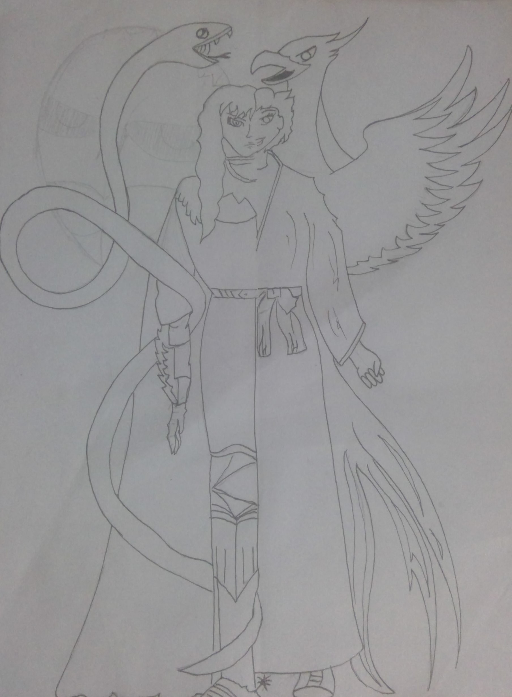
Home
El Equilibrio del Aura
No existía registro alguno sobre su verdadero origen.
Algunos lo describían como un antiguo guerrero. Otros aseguraban que había gobernado un reino olvidado. También estaban quienes afirmaban que era un viajero procedente de una tierra donde la nieve nunca dejaba de caer.
Ninguna descripción de su vestimenta resultó tan relevante como el efecto que producía su presencia. Las crónicas coinciden en que, antes incluso de pronunciar una palabra, el ambiente parecía transformarse a su alrededor.
Su propósito consistía en reunirse con cada uno de ellos para comprender la naturaleza de sus habilidades. El primero en presentarse fue Damian.
La tensión entre ambos era evidente.
Sin pronunciar una sola palabra, Damian reveló su nuevo poder. No era una habilidad común; era una manifestación nacida de la región más oscura de su alma, alimentada durante años por el resentimiento y la ira.
El misterioso hombre observó aquella energía con absoluta atención.
Comprendió que Damian se había vuelto más fuerte. Su poder ya no era una simple explosión de emociones descontroladas; había adquirido forma, estructura y voluntad propia. La maldición también había evolucionado.
Durante unos segundos sostuvo su mirada.
Y, por primera vez en mucho tiempo, consiguió conectar con él.
No observó únicamente el poder que emanaba de su aura.
Observó también el origen de aquel poder.
Comprendió el dolor que habitaba en su memoria y descubrió que ambos compartían una herida semejante. Él también había conocido la desesperación.
Se preguntó qué habría sido de su propia vida si nunca hubiera podido volver a conversar con su madre o con su familia; si todas las llamadas que intentó realizar nunca hubieran salido realmente, o si aquellas dirigidas hacia él nunca hubieran llegado a su destino; si hubiese querido escapar de aquella tortura y no hubiera encontrado ninguna salida.
Entonces comprendió que la ira de Damian nunca había sido el verdadero problema.
Había sido únicamente la consecuencia.
Por primera vez entendió la verdadera dimensión del resentimiento que consumía a aquel joven.
Y llegó a una conclusión.
Todo poder nacido del resentimiento debía poseer un equivalente nacido de la esperanza.
Toda manifestación de la maldición debía conservar, en algún lugar de la memoria, un recuerdo capaz de devolver el equilibrio al aura de su portador.
Después de un largo silencio, el misterioso hombre habló.
—Aún posees otro poder —dijo con serenidad—. Pero nunca nacerá de tu ira. Solo responderá al recuerdo más feliz que conserves.
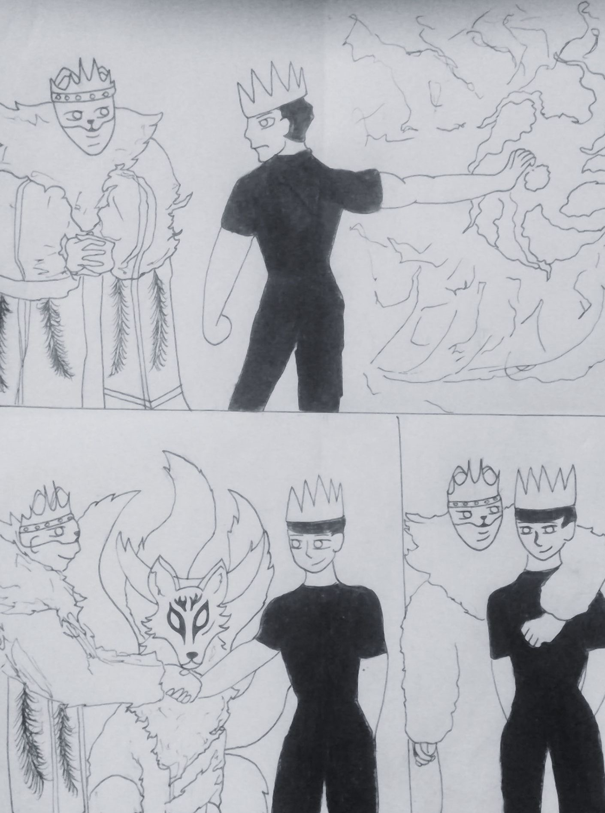
Aquellas palabras rompieron un silencio que llevaba años habitando en el interior de Damian.
Le resultaba difícil imaginar la felicidad. Le costaba verse sonriendo o aceptar que tenía derecho a experimentar aquel sentimiento. Durante demasiado tiempo creyó que la paz pertenecía únicamente a los demás.
Sin embargo, mientras permanecía frente a aquel hombre, comprendió algo inesperado.
Su poder nunca había provenido únicamente del sufrimiento.
También nacía de su aura.
Y el aura respondía a la memoria.
Durante unos instantes experimentó un bienestar que creía imposible. La claridad que acompañaba aquella sensación disipó la niebla de sus recuerdos. Entonces entendió por qué la presencia de aquel hombre le resultaba tan familiar.
Ya se habían encontrado antes.
No era un desconocido.
Era parte de su familia.
En ese instante, los recuerdos comenzaron a adquirir un nuevo significado. El linaje de su madre nunca había sido una historia olvidada, sino una herencia que él no había comprendido. Los verdaderos herederos del norte siempre habían permanecido allí, ocultos bajo el peso de la maldición y el paso del tiempo. No eran como él los había imaginado.
Las leyendas habían cambiado el rostro de los herederos, pero no pudieron alterar su linaje. Lo que el mundo recordaba del norte era solo una imagen; su verdadero origen permanecía intacto. Por primera vez, Damian dejó de sentirse un extraño dentro de su propia historia. No era él quien nunca había encajado. Eran los relatos los que nunca habían contado la verdad.
Por primera vez dejó de ver a su familia como el origen de su sufrimiento. Entendió que ellos también habían cargado con la misma pérdida, el mismo dolor y el mismo destino. La maldición nunca había distinguido entre unos y otros; todos habían sido sus víctimas.
Ya no estaban separados por el pasado.
Los unía el mismo destino.
La maldición nunca destruyó a su familia. Solo consiguió que dejaran de reconocerse.
Fue así como descubrió uno de los principios fundamentales para romper la maldición.
La familia no era únicamente un vínculo de sangre.
Era el mecanismo mediante el cual el aura podía reconstruirse.
Un solo individuo difícilmente podría vencer a todos sus enemigos.
Pero una familia unida...
Quizá sí.
Entonces los recuerdos comenzaron a regresar.
No pertenecían a un pasado lejano.
Seguían vivos.
Las risas, las conversaciones, las complicidades y los momentos compartidos nunca habían desaparecido.
Simplemente permanecían ocultos bajo el peso del resentimiento.
Y Damian comprendió que su verdadera familia materna no había dejado de esperarlo.
Solo debía aceptarla.
El hombre misterioso permaneció en silencio. Durante muchos años había cargado con la responsabilidad de preservar el legado del norte. Había creído que su deber estaba ligado a una historia, a un linaje y a un destino que debía cumplirse.
Pero en ese instante comprendió que había estado buscando la respuesta equivocada.
El norte nunca había sobrevivido por sus coronas ni por sus gobernantes.
Había sobrevivido porque, incluso en los momentos más oscuros, existía un vínculo que no podía ser reemplazado.
La familia.
Una familia no existía para competir entre sí por un lugar más alto. Cada miembro tenía su propio valor, su propia responsabilidad y su propio camino.
El poder de uno no disminuía al otro.
Al contrario, era la unión de todos lo que permitía que el norte permaneciera en pie.
Entonces comprendió que la verdadera amenaza de la maldición nunca había sido la pérdida del poder.
Había sido hacerles olvidar que su fuerza nunca perteneció a un solo individuo.
Cada miembro del norte era una parte de un mismo legado. Separados, podían ser derrotados uno por uno. Unidos, representaban una fuerza que ningún enemigo podía atravesar.
La maldición no buscó destruir sus tierras.
Buscó dividir a quienes habían nacido para protegerlas juntos.
Home
El Color de los Recuerdos
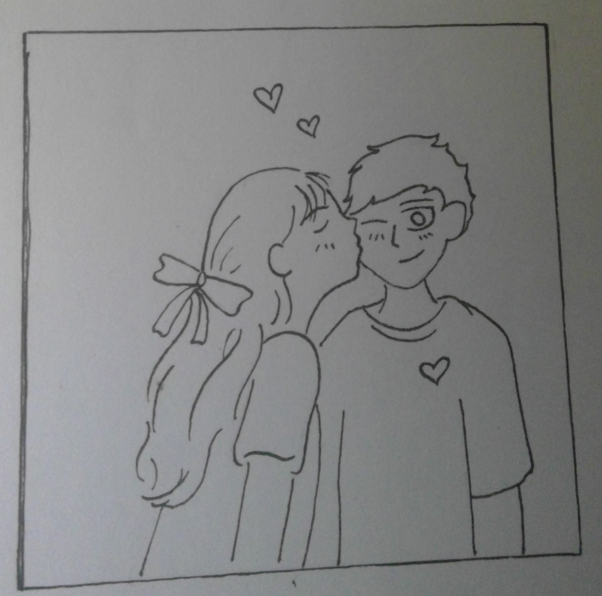
Aquellos recuerdos hicieron demasiado ruido en la mente de aquellos dos jóvenes.
El primero en emerger pertenecía a Damian.
No fue una batalla.
No fue una victoria.
No fue ningún entrenamiento.
Fue un cielo.
Un cielo celeste, limpio e inmenso, exactamente igual al que contemplaba cuando apenas era un niño en el jardín de infancia.
Bajo aquel cielo descubrió por primera vez una emoción que no volvería a experimentar con la misma inocencia: el primer amor.
No era un acontecimiento extraordinario para la historia del mundo.
Precisamente por eso poseía un valor incalculable.
En aquel instante no existían ambiciones, responsabilidades ni promesas imposibles. Solo la serenidad de un niño que todavía desconocía la existencia del odio, el rencor y la pérdida.
El paso del tiempo había transformado casi todos sus recuerdos.
Pero no ese.
Aquel momento había permanecido intacto, resguardado en el lugar más profundo de su memoria, como si incluso los años hubieran sido incapaces de alcanzarlo.
Los registros emocionales revelaban un fenómeno inesperado.
La maldición era incapaz de alterar los recuerdos nacidos antes de su propia existencia. Mientras Damian observaba aquella escena, la oscuridad disminuía y dejaba de expandirse.
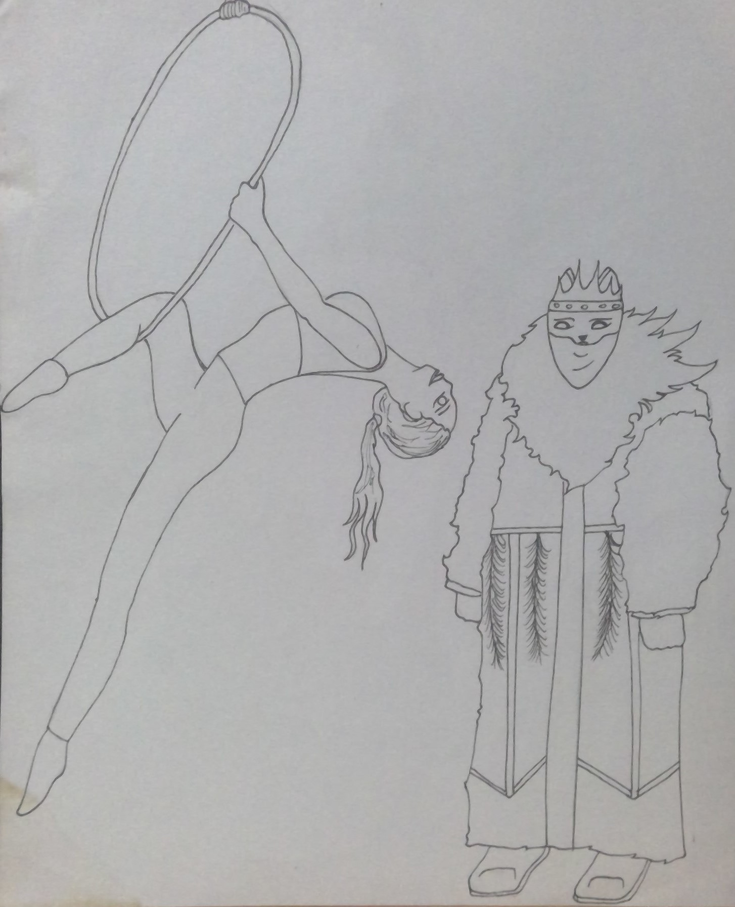
Para el hombre misterioso, el recuerdo también lo condujo a su infancia.
Entre decenas de momentos que habían marcado su vida, su memoria eligió uno sorprendentemente sencillo.
Recordó a una niña que, sin proponérselo, había ocupado un lugar especial en su corazón. Nunca existieron promesas, confesiones ni grandes gestos. Ella simplemente siguió su propio camino, mientras él aprendía, con la naturalidad propia de la niñez, que no todos los sentimientos encuentran un destino compartido.
Lejos de convertirse en una herida, aquel recuerdo terminó transformándose en una de las experiencias más valiosas de su vida.
Porque no conservó la tristeza.
Conservó la capacidad de admirar, de ilusionarse y de descubrir la belleza que existe en querer a alguien sin esperar nada a cambio.
Con el paso de los años, el destino volvió a sorprenderlo.
Cuando ya había dejado de mirar hacia el pasado, apareció una joven cuya presencia le transmitía aquella misma paz que alguna vez había sentido siendo niño. No era la misma persona, ni pretendía ocupar su lugar. Era alguien completamente diferente, con su propia historia, sus propias virtudes y una forma de verlo que él no había imaginado.
Por primera vez comprendió lo que significaba ser elegido.
Aquella joven veía en él algo que él mismo nunca había logrado descubrir. Admiraba su calma, su manera de proteger a los demás y la serenidad con la que enfrentaba incluso los momentos más difíciles. Sin proponérselo, le recordó que algunas personas llegan a nuestra vida no para reemplazar los recuerdos del pasado, sino para demostrar que el corazón siempre conserva la capacidad de escribir nuevas historias.
Mientras aquel recuerdo recorría su mente, la maldición también retrocedía.
No porque el pasado hubiera cambiado.
Sino porque la memoria había decidido conservar aquello que realmente importaba.
Home
El sello
El poder más peligroso no siempre es el que está creciendo. A veces es el que lleva toda una vida contenido.
El bosque permanecía inmóvil.
Ni el viento se atrevía a romper el silencio.
En medio del claro esperaba un hombre vestido con la elegancia de la realeza. Su postura era impecable. Su mirada, serena. Había recorrido incontables reinos buscando a personas extraordinarias, pero aquella reunión despertaba en él una curiosidad diferente.
Entonces el agua comenzó a moverse.
Desde sus profundidades emergió una unicornia montada sobre una inmensa tabla de surf. No cabalgaba las olas; las dirigía. Cada giro despertaba corrientes antiguas que llevaban siglos dormidas bajo el océano.
Sobre las copas de los árboles descendió un búho.
Las corrientes cambiaban de dirección con un simple movimiento de sus plumas.
Entre la maleza apareció un lobo.
Su andar producía un sonido metálico.
Cada pisada hacía vibrar la tierra como si enormes vetas de hierro respondieran a su llamado.
Finalmente apareció un ciervo.
No corría.
No hacía falta.
Donde apoyaba sus patas brotaban raíces, flores y vida.
La tierra despertaba para recibirlo.
Solo entonces apareció ella.
Vestía ropa sencilla.
Sin joyas.
Sin armaduras.
Sin corona.
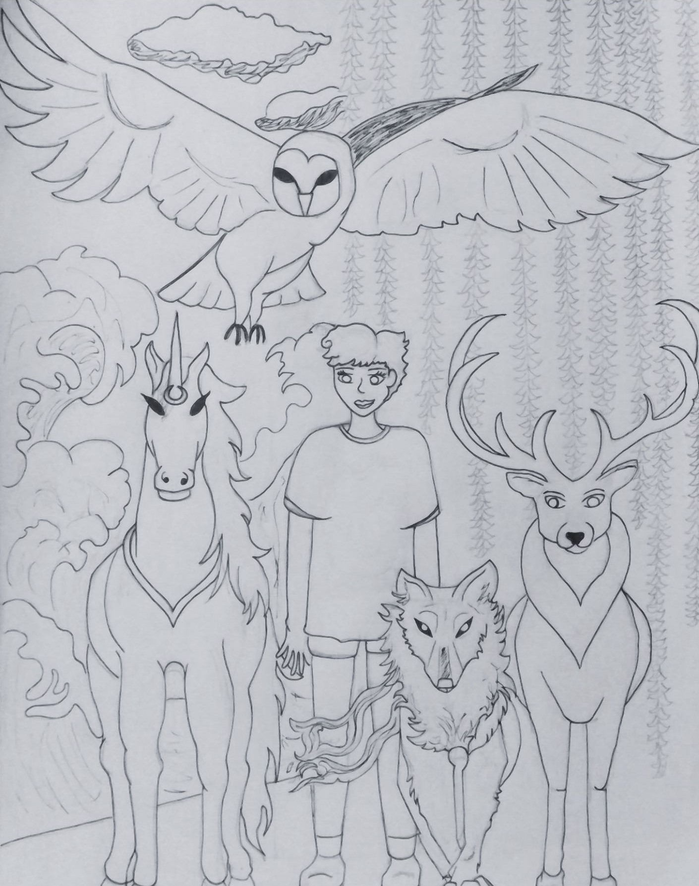
Mientras el hombre misterioso irradiaba la presencia de la realeza, aquella mujer caminaba como alguien que solo deseaba sentir el viento sobre su rostro.
Era libre.
Y esa libertad resultaba mucho más imponente que cualquier símbolo de poder.
Los cuatro guardianes caminaron detrás de ella.
No como soldados.
Como familia.
El hombre sonrió.
—Así que eres tú...
Ella inclinó ligeramente la cabeza.
—Me dijeron que querías conocer mis habilidades.
Su mirada recorrió lentamente a los cuatro animales.
—La visión del unicornio...
La sabiduría del búho...
El espíritu indómito del lobo...
Y la quietud del ciervo...
Guardó silencio unos segundos.
—Pocas personas consiguen reunir cuatro virtudes sin que una destruya a las demás.
Ella respondió con absoluta serenidad.
—La paciencia les da un mismo camino.
Aquella respuesta hizo que el hombre permaneciera inmóvil.
Porque él no estaba viendo lo mismo que todos.
No veía cuatro guardianes.
Veía cuatro reinos.
El Reino del Unicornio
Cuatrocientos años atrás, la magia del mundo desapareció.
No porque la magia dejara de existir.
Sino porque los dos últimos unicornios permanecían encadenados.
Reyes.
Magos.
Conquistadores.
Nadie logró encontrarlos.
Hasta que una muchacha desconocida rompió las cadenas sin desenvainar una espada.
No conquistó.
No destruyó.
Liberó.
Desde aquel día los océanos volvieron a respirar.
Por eso la unicornia ya no se apartaba de ella.
No la seguía porque fuera una reina.
La seguía porque le había devuelto la libertad.
Y el hombre comprendió algo más.
Los unicornios nunca habían conocido la oscuridad.
Nunca habían sentido odio.
Jamás habían deseado venganza.
Su verdadero poder seguía dormido.
El Reino del Lobo
El lobo era distinto.
Había nacido para la guerra.
La ferocidad pertenecía a su naturaleza.
No a ella.
Sin embargo...
Bastó una caricia.
La inmensa bestia cerró los ojos.
No existía cadena capaz de domesticar a un lobo.
Solo la confianza.
Entonces el hombre comprendió que aquella mujer no imponía obediencia.
Inspiraba paz.
Incluso la violencia elegía descansar junto a ella.
El Reino del Búho
El búho no había aprendido leyendo.
Había aprendido sobreviviendo.
Cada traición.
Cada pérdida.
Cada cicatriz.
Se convirtió en sabiduría.
Por eso el viento nunca abandonaba sus alas.
El aire era invisible.
Igual que el verdadero conocimiento.
El Reino del Ciervo
Donde caminaba el ciervo...
La tierra florecía.
No era magia.
Era esperanza.
Una esperanza que sobrevivía incluso después del dolor.
Por eso los bosques lo reconocían.
Porque todavía existía alguien capaz de sonreír sin olvidar las heridas.
El hombre permaneció en silencio.
Agua.
Aire.
Metal.
Tierra.
Cuatro reinos.
Cuatro guardianes.
Cuatro virtudes.
Y entonces...
Lo vio.
Más allá de toda aquella luz.
Existía otra presencia.
No pertenecía al océano.
Ni al viento.
Ni al metal.
Ni a la tierra.
Era una sombra.
Pequeña.
Silenciosa.
Dormida.
"Ahí está..."
"No es paciencia."
"No es equilibrio."
"Es algo mucho más antiguo."
Durante un instante una oscuridad apenas perceptible rodeó el aura de la mujer.
Nadie más la vio.
Pero él sí.
Comprendió inmediatamente su significado.
Mientras otros guerreros obtenían fuerza mediante la ira...
Aquella mujer ocultaba un poder que solo despertaría cuando su corazón reuniera suficiente oscuridad.
El hombre bajó la mirada.
Durante un instante permaneció en silencio, observando a aquella mujer que llevaba toda una vida conteniendo una fuerza capaz de cambiar el mundo.
Entonces se preguntó...
¿Qué hace realmente fuerte a una persona: liberar su poder... o decidir no usarlo?
Porque entendió la verdad.
La paciencia nunca había sido una virtud.
Era el sello.
Home
El Nuevo Reino de Fuego
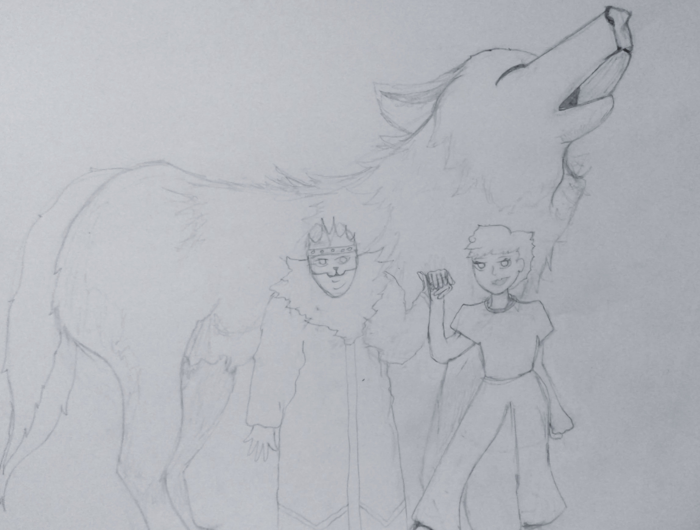
El hombre misterioso permaneció inmóvil.
Durante unos segundos contempló a la mujer sin pronunciar una sola palabra. Después extendió lentamente su mano.
Ella comprendió el gesto.
Ambos unieron sus manos y cerraron los ojos. Ninguno intentó imponer su propia energía sobre la del otro. Por el contrario, permitieron que ambas auras encontraran un equilibrio natural.
El bosque respondió antes que ellos.
Las hojas comenzaron a vibrar. El viento cambió de dirección y una presión desconocida recorrió la tierra.
Entonces apareció.
El lobo.
Su tamaño aumentó de forma desproporcionada. Sus patas parecían sostener una montaña y su cabeza alcanzó una altura cercana a la del árbol más antiguo y alto del bosque. Nunca antes aquel reino había manifestado semejante crecimiento.
No era únicamente un animal.
Era la representación física de un poder compartido.
Durante un instante, el hombre creyó estar observando el porvenir.
Después dudó.
Tal vez aquello no pertenecía al futuro.
Tal vez ese reino ya había despertado con ellos.
Los dos permanecieron en silencio. Ninguno encontraba palabras suficientes para describir lo que acababan de provocar.
Aun así, el hombre seguía observando una pequeña anomalía.
Entre el brillo del aura de la joven persistía una diminuta sombra.
No parecía una herida.
Era una sombra.
—Concéntrate en ella —dijo con calma el hombre.
La mujer se concentró.
Sin darse cuenta de cuánto tiempo había transcurrido, ambos descubrieron que el sol ya había desaparecido. La luna iluminaba ahora el bosque. Habían perdido completamente la noción de las horas.
Ella se sentó sobre la hierba.
Su respiración era pesada. El esfuerzo comenzaba a afectarla.
Sin embargo, cuando dirigió toda su atención hacia aquella pequeña mancha oscura, sintió una energía completamente distinta recorrer su cuerpo.
Era cálida.
No era fría.
Era antigua.
Un destello atravesó el bosque.
Duró apenas un instante.
Fue suficiente.
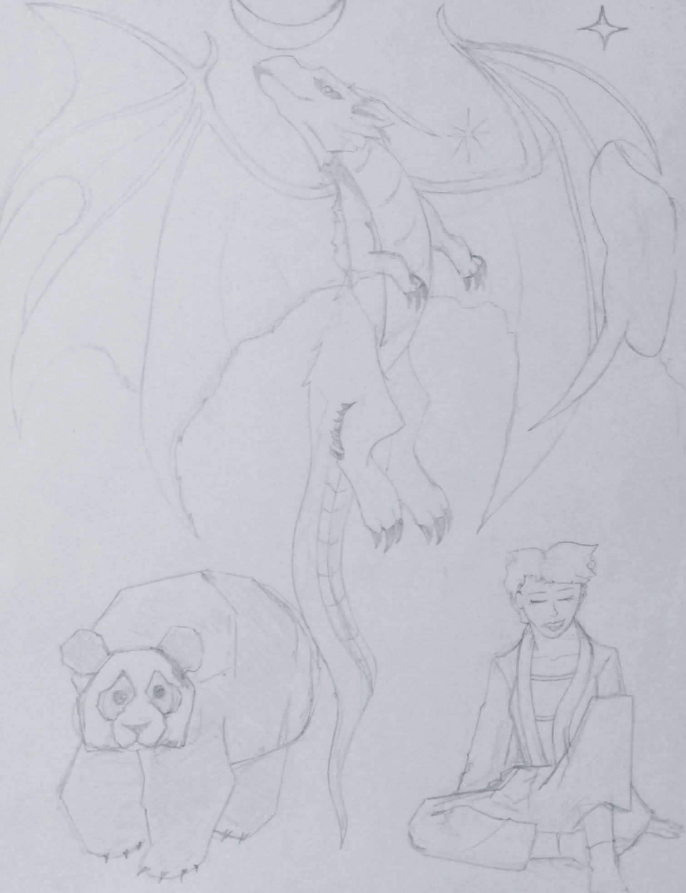
Desde aquella luz emergió un dragón que abrió lentamente sus alas sobre el cielo nocturno. Cada movimiento parecía incendiar el aire sin consumir un solo árbol.
El hombre retrocedió un paso.
El Reino del Fuego...
La seguía.
No la dominaba.
No la consumía.
Simplemente caminaba junto a ella.
Aquello desafiaba todo cuanto conocía.
Hasta donde alcanzaban los antiguos registros, el fuego respondía únicamente a un único portador. Su último amo había perdido ese vínculo hacía mucho tiempo.
Entonces...
¿Cómo era posible?
Antes de encontrar una respuesta, una esfera dividida entre blanco y negro descendió lentamente desde el cielo.
Al tocar el suelo, apareció algo inesperado, un panda.
Su sola presencia disipó la tensión del bosque.
El hombre lo reconoció de inmediato.
Era el antiguo protector contra las maldiciones, las cadenas invisibles y contra las energías destinadas a quebrar el espíritu de quienes caminaban solos.
Ahora comprendía todavía menos.
Frente a él se encontraba una mujer seguida por 4 animales totalmente diferentes y además el dragón y el panda.
Fuerzas que durante siglos habían permanecido separadas.
Fuerzas que no aceptaban compartir un mismo camino.
Y, sin embargo...
Allí estaban.
Ninguna luchaba por imponerse sobre la otra.
Todas parecían haber elegido caminar a su lado.
Fue entonces cuando una vieja enseñanza regresó a su memoria.
No todos los sucesores nacían por sangre.
Algunos eran reconocidos por aquello que habitaba en su interior.
No por el poder que poseían...
Sino por el equilibrio que eran capaces de conservar entre poderes destinados a destruirse.
El hombre ya no volvió a mirar a la joven de la misma manera.
También comprendió por qué aquella mujer jamás había temido enfrentarse a la Serpiente.
Quien conoce la esencia del Dragón no ignora la forma en que una serpiente piensa, se mueve y ataca.
Era conocimiento, uno muy antiguo.
Sin embargo, mientras el dragón desaparecía lentamente, el hombre descubrió que la pequeña sombra seguía allí.
Había crecido.
La mujer comenzó a elevarse unos centímetros sobre el suelo.
Abrió los ojos y habló con una serenidad que resultaba imposible de fingir.
—Lo que estás viendo es el poder destructivo que permanece sellado dentro de mí. Solo despertará cuando aparezca el depredador.
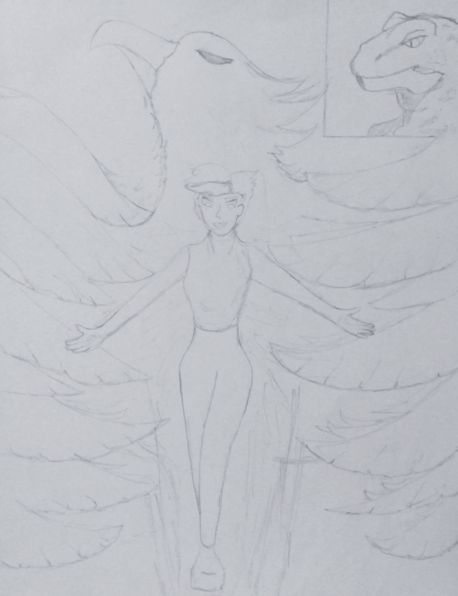
El bosque volvió a quedar en silencio.
Por primera vez, el hombre sospechó que aquel sello no había sido impuesto por un enemigo.
Tal vez...
Había sido creado por la propia portadora.
Quiso preguntar por qué le mostraba aquel secreto precisamente esa noche.
Pero ella respondió antes de que pudiera hacerlo.
—Este poder llama la atención de los reptiles.
Después descendió lentamente.
El agotamiento terminó por vencerla.
Se quedó dormida bajo la luz de la luna mientras el hombre permanecía despierto, observando el cielo e intentando ordenar todo cuanto acababa de descubrir.
Creía haber presenciado el despertar de un nuevo Reino del Fuego. Un reino que no perseguía enemigos ni ansiaba poder. Permanecía junto a su portadora, esperando el único momento para el que había sido creado: impedir que el mundo fuera consumido por la serpiente.
Porque cuando un poder ancestral despierta...
Sus ecos rara vez permanecen en un solo corazón.
Esa misma noche, muy lejos de aquel bosque, otro descendiente comenzó a soñar.
Home
Los Sueños de Damian
Esa misma noche, Damian volvió a recorrer el jardín de infancia que tantas veces había aparecido en sus recuerdos.
Sin embargo, algo había cambiado.
Él ya no era un niño.
Y aquella joven tampoco lo era.
No dijeron una sola palabra.
Ella sostenía entre sus manos un ave.
No era un ave cualquiera.
—Es un cuervo.
Damian comprendió que aquel animal había sido llevado hasta él.
Era un regalo.
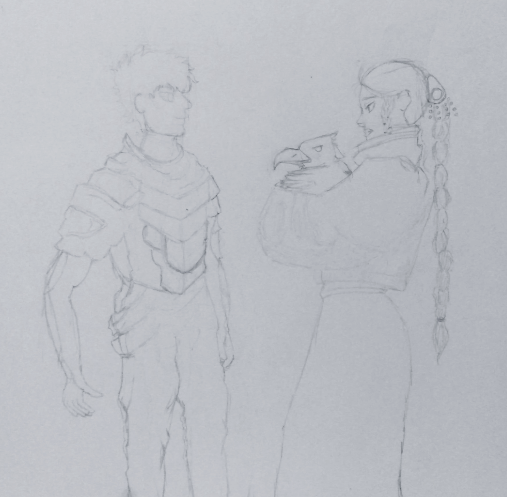
Su plumaje negro reflejaba la luz con una intensidad imposible, como si la noche entera hubiera decidido habitar entre sus plumas.
Nunca antes había visto un cuervo semejante.
Sabía que los cuervos eran considerados una de las criaturas más inteligentes sobre la faz de la Tierra.
Aun así, aquel parecía poseer una sabiduría mucho más antigua.
Permanecía completamente inmóvil entre las manos de la joven, observándolo como si lo hubiera estado esperando desde hacía mucho tiempo.
Damian extendió lentamente ambas manos.
Aceptó el regalo.
Entonces el sueño cambió.
Ahora contemplaba un lobo.
No era un lobo común.
Permanecía inmóvil, como si hubiera estado dormido durante siglos.
De pronto abrió los ojos.
No abrió dos.
Abrió siete.
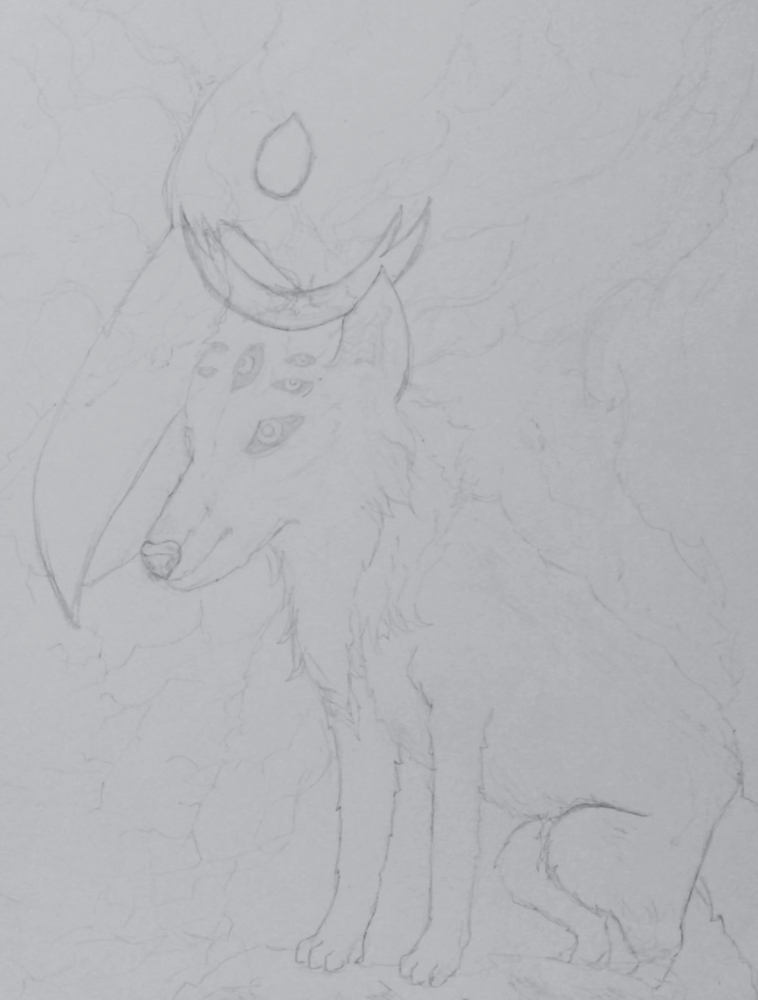
En su mirada descansaban la memoria de la Tierra, la fuerza del Reino del Norte y el espíritu del cuervo, como si ambos hubieran decidido caminar juntos a partir de aquella noche.
El último sueño resultó todavía más extraño.
Ante él apareció un lobo gigantesco.
Su tamaño superaba cualquier cosa que hubiera imaginado.
Y sobre su lomo viajaba una figura imposible de creer.
Era Spider-Man.
Simplemente viajaba junto al lobo, como si ambos hubieran aceptado recorrer el mismo camino.
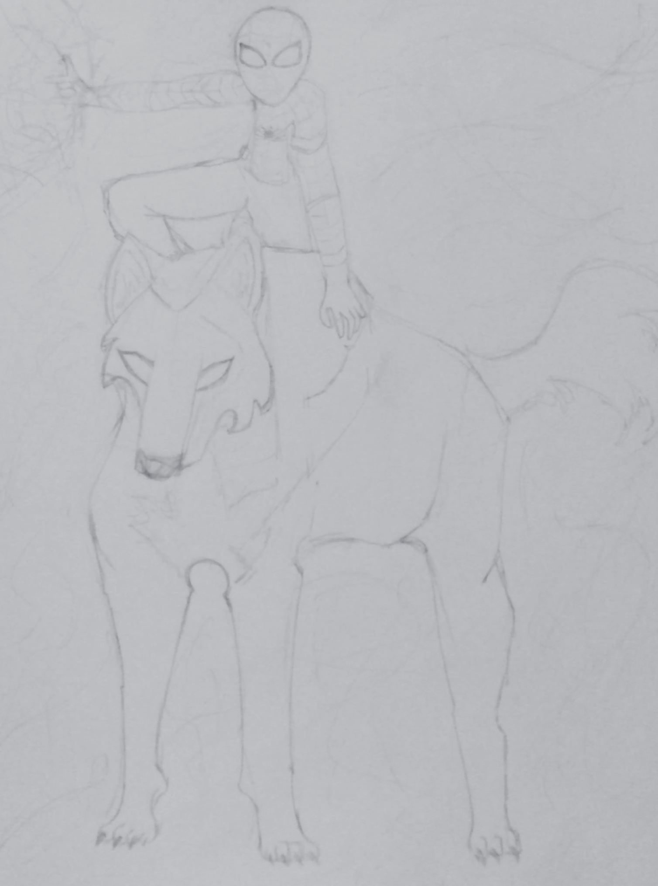
Cuando Damian despertó, recordaba cada detalle de aquellos sueños.
Una extraña sensación permanecía en su interior.
Como si una parte de ellos no hubiera sido un sueño... sino una premonición.
Al despertar, descubrió que los sueños habían terminado, pero las preguntas apenas comenzaban
¿Quién era realmente aquella joven?
¿Y si aquella joven también formaba parte de su futuro?
¿Por qué el cuervo había sido entregado precisamente a él?
¿Y si aquello no había sido un sueño?
¿Qué vínculo unía a Spider-Man con el lobo?
¿Era Spider-Man quien guiaba al lobo... o era el lobo quien guiaba a Spider-Man?
¿Qué intentaban mostrarle aquellos sueños?
Home
La Colección de Krystal
Aquella misma noche, mientras Damian era visitado por sueños que parecían desafiar el tiempo, su madre también soñó.
Frente a ella apareció un enorme castillo.
La luna iluminaba cada una de sus torres, y aunque estaba completamente sola, una extraña sensación comenzó a recorrer su cuerpo.
Conocía aquel lugar.
Estaba segura de haber estado allí antes.
Se aproximó lentamente.
Las enormes puertas comenzaron a abrirse por sí solas, como si el castillo hubiera estado esperándola desde hacía mucho tiempo.
Nadie salió a recibirla.
Nadie intentó detenerla.
Solo existía un profundo silencio.
Avanzó por interminables pasillos hasta llegar a una habitación distinta a todas las demás.
Las paredes estaban cubiertas por enormes estanterías.
Sobre cada una descansaban decenas de muñecos de colección.
Todos eran diferentes.
Cada uno llevaba una pequeña placa con un nombre y estaban amarrados por cadenas.
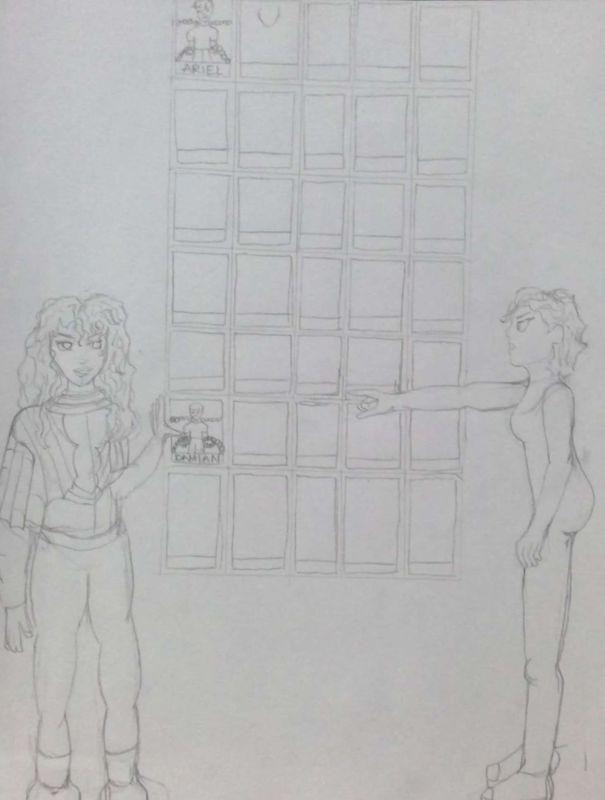
La mujer comenzó a recorrerlos uno por uno.
Algunos le resultaban completamente desconocidos.
Otros despertaban una extraña sensación de tristeza.
Entonces sus ojos se detuvieron.
Damian.
Su respiración se detuvo por un instante.
Aquel muñeco llevaba el nombre de su hijo.
Antes de que pudiera tomarlo, otra mano se apoyó lentamente sobre la caja.
—Veo que encontraste mi hermosa colección de muñecos.
La voz era inconfundible.
Krystal.
La mujer levantó lentamente la mirada.
No sentía miedo.
Solo una profunda ira.
—¿Esta es tu colección?
Guardó silencio durante unos segundos mientras observaba el castillo.
Entonces comprendió.
—...Este castillo...
Volvió a mirar a Krystal.
—Es tu casa.
Por primera vez, todas las piezas comenzaron a encajar.
El Castillo de la Luna siempre le había pertenecido a la Serpiente.
Su mirada volvió al muñeco.
—Ese...
¿Ese es Damian?
¿Mi hijo?
Krystal sonrió.
—Sí.
La madre sintió cómo la rabia recorría todo su cuerpo.
—¿Por qué haces esto?
Krystal acarició lentamente la caja.
—No deberías molestarte.
Volvió a sonreír.
—Damian es el muñeco más hermoso de toda mi colección.
Hizo una breve pausa.
—Y también el más obediente.
La madre permanecía inmóvil.
Krystal continuó hablando con la misma tranquilidad.
—Deberías sentirte orgullosa.
Míralo.
Jamás se rebela.
Jamás cuestiona.
Siempre termina exactamente donde yo necesito que esté.
A diferencia de ti...
Él sí disfrutará de los frutos de todo esto.
Aunque no de todos.
Después de todo...
Ahora no es más que un simple muñeco.
La madre bajó lentamente la mirada.
Las respuestas comenzaron a llegar una detrás de otra.
Entonces levantó nuevamente la cabeza.
—Ahora lo entiendo.
Krystal no respondió.
—Nunca pensaste convertir a Damian en rey.
Querías que su padre ocupara ese lugar...
Y que, mientras él reinara, le arrebatara todo aquello que le pertenecía a mi hijo.
Por eso nunca me permitiste acercarme a él.
Siempre procuraste que permaneciera junto a su padre.
Krystal volvió a sonreír.
—Exactamente.
Caminó lentamente alrededor de la habitación.
—Su padre es increíblemente fácil de manipular.
Me ha costado muy poco conseguir que haga exactamente lo que necesito.
Y mientras él siga moviéndose...
Damian también lo hará.
La madre no apartó la mirada.
Krystal continuó.
—Aunque sería injusto atribuirle todo el mérito.
No ha sido el único.
Algunos miembros de su propia familia también han contribuido a todo esto, a mantenerme exactamente donde quiero estar.
Una nueva duda comenzó a tomar forma en la mente de la madre.
¿Acaso aquellas personas también servían a Krystal?
El silencio volvió a llenar la habitación.
Entonces la madre habló.
—Ya sé cómo lo hiciste.
Krystal arqueó ligeramente una ceja.
—Con MK.
La sonrisa de Krystal no desapareció.
—Veo que por fin lo descubriste.
La madre apretó los puños.
Krystal respondió con absoluta tranquilidad.
—No debería sorprenderte.
MK hace que trabajen para mí...
Sin darse cuenta.
Después la observó fijamente.
—Tú siempre fuiste un problema Gloria, le dijo a la madre.
Nunca logré controlarte.
Nunca logré hacer que pensaras como los demás.
Por eso has sufrido tanto.
La madre dio un paso al frente.
—Vas a pagar por todo esto.
Krystal soltó una leve risa.
—¿Ah, sí?
Su sonrisa se hizo todavía más amplia.
—¿Y cómo piensas hacerlo?
Hizo una breve pausa antes de continuar.
—Tu propio hijo ni siquiera te habla.
Krystal sonrió lentamente.
—Y aunque algún día decida escucharte...
—Yo estaré ahí.
—Cada palabra que le digas, cada recuerdo que intentes devolverle, cada advertencia que quieras hacerle...
—Yo puedo distorsionarlo todo.
—Puedo hacer que dude de sus propios recuerdos.
—Puedo hacer que cuestione tus palabras antes incluso de comprenderlas.
Se acercó lentamente a la caja donde descansaba Damian.
—Si tú le dices por ejemplo, que lo alejé de ti...
—Yo le haré creer que tú fuiste quien decidió abandonarlo.
—Y cuando intente recordar...
—Yo le diré que estás mintiendo.
—Ni siquiera sabrá qué versión de la historia es verdadera.
—Y él me creerá a mí.
Krystal levantó la mirada.
—Porque yo puedo verlo todos los días.
—Tú no.
—¿Qué vas a hacer?
—¿Contarle todo lo que acabo de decirte?
Por primera vez desde que había entrado en el Castillo de la Luna, la madre sonrió.
No era una sonrisa de alegría.
Era la sonrisa de quien acababa de comprender que la verdad ya no podía volver a ocultarse.
—No será necesario.
Krystal dejó de sonreír por un instante.
—Porque acabas de hacerlo tú.
Krystal simplemente le dio la espalda.
Comenzó a alejarse.
No tenía intención de seguir hablando.
Fue entonces cuando ocurrió.
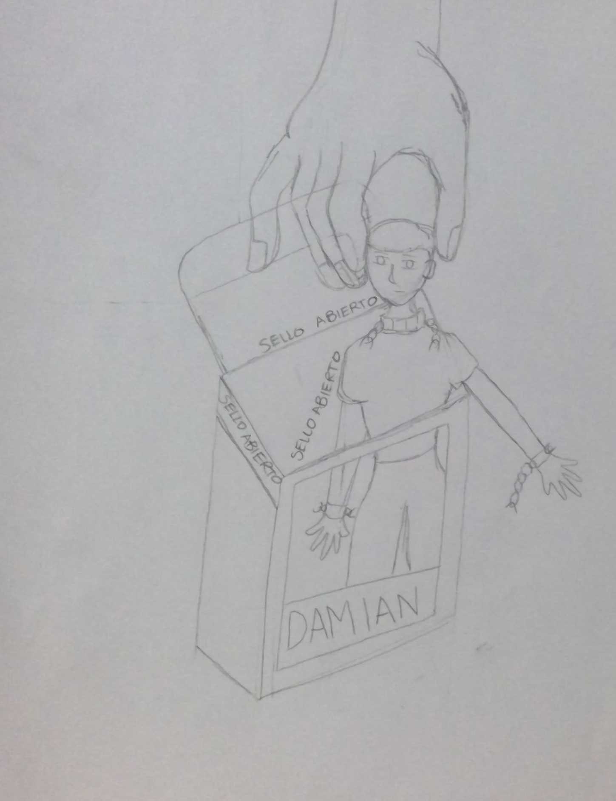
La madre tomó entre sus manos la caja de Damian.
La levantó con todas sus fuerzas.
Y rompió las cadenas que mantenían unido al muñeco.
El sonido del metal recorrió todo el castillo.
No parecían romperse unas simples cadenas.
Parecía romperse un antiguo sello.
Krystal se detuvo.
Por primera vez...
La sonrisa desapareció.
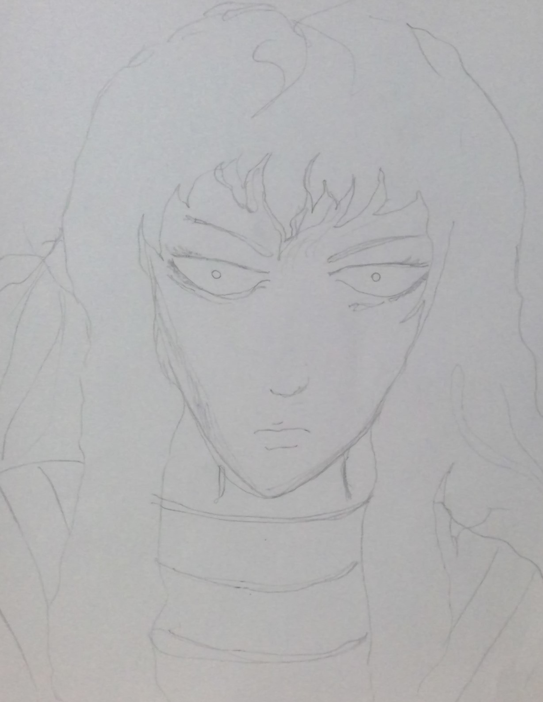
Un frío imposible recorrió todo su cuerpo.
No pudo dar un paso más.
No pudo pronunciar una sola palabra.
Permanecía completamente inmóvil.
Como si su propio veneno hubiera terminado por convertirla en piedra.
La madre sostuvo el muñeco de Damian entre sus manos.
Las cadenas ya no existían.
La maldición había sido rota.
Entonces levantó la mirada.
Su voz resonó con fuerza por todo el salón.
—Y esto no es lo único que vas a ver.
Hoy voy a mostrarte tu futuro.
Antes de que Krystal pudiera reaccionar, todo desapareció.
El castillo volvió a construirse delante de ambas.
Pero ya no era el mismo.
El gran salón permanecía intacto.
El Trono de Hierro seguía ocupando el centro de la habitación.
Solo existía una diferencia.
Ya no estaba vacío.
Un joven ocupaba aquel lugar.
Damian.
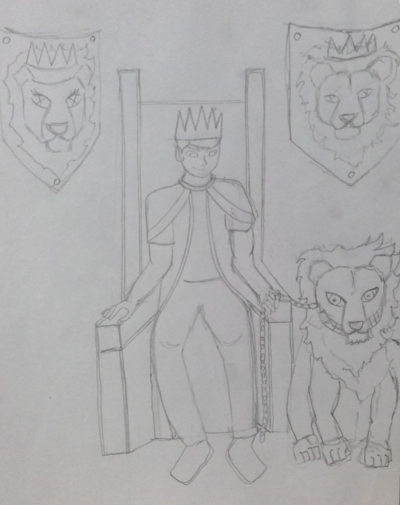
Sentado con absoluta serenidad.
Detrás de él descansaban dos enormes cabezas de león.
El rey y la reina de aquel castillo habían sido conquistados.
A los pies del trono...
Otro león permanecía sujeto por gruesas cadenas.
No rugía.
No luchaba.
No podía escapar.
Entonces Krystal levantó lentamente la mirada.
Reconoció aquel rostro.
El león era ella.
Después de un tiempo observando a Krystal en shock, la madre habló con una serenidad que helaba el alma.
—Nunca fuiste un lobo.
—Nunca comprendiste el frío.
—Y jamás aprendiste a esperar el invierno.
El silencio volvió a apoderarse del castillo.
Krystal levantó lentamente la mirada.
A pesar de la visión...
Volvió a sonreír.
—No importa.
—Damian jamás dejará de seguirme.
La madre permaneció completamente tranquila.
No respondió de inmediato.
—Te equivocas, Damian nunca fue obediente, tú confundiste su nobleza con obediencia, confundiste su respeto con sumisión y nunca comprendiste quién era realmente.
Miró por un instante el trono.
—Damian no nació para obedecer, nació para gobernar, por eso actúa como la realeza incluso cuando nadie lo está mirando, no porque tú lo hayas convertido en un muñeco... Sino porque esa siempre fue su naturaleza.
Krystal guardó silencio.
La madre continuó.
—Nunca entendiste la diferencia, porque nunca perteneciste a un reino, solo ocupaste un lugar que no te correspondía.
El silencio volvió a llenar el castillo.
Entonces Krystal sonrió una vez más.
—Aun así...
—Él siempre volverá a mí.
La madre negó lentamente con la cabeza.
—No me preocupa.
Krystal frunció ligeramente el ceño, se preguntaba por qué.
—Es mi hijo, dijo la madre, y la conexión que compartimos no nació de tus cadenas, nació mucho antes de que tú aparecieras.
La madre llevó lentamente una mano hasta su pecho.
—Durante nueve meses creció dentro de mí.
—Mi corazón fue el primer sonido que escuchó.
—Mi sangre fue su alimento.
—Mi cuerpo fue su primer hogar.
Sus ojos comenzaron a humedecerse.
—Después lo sostuve entre mis brazos.
—Lo alimenté.
—Lo protegí.
—Lo amé con todo lo que tenía.
Respiró profundamente.
—Ese vínculo no puede comprarse ni compararse. Es único, como él y como su hermano.
—No puede manipularse.
—Y mucho menos romperse.
La voz de la madre se volvió firme.
—Cada vez que Damian se mire en un espejo...
—Recordará exactamente quién es.
—No porque yo se lo repita.
—Sino porque siempre lo supo.
Krystal ya no sonreía.
La madre dio un último paso.
—Podrás engañar su mente durante un tiempo.
—Pero jamás podrás ocupar el lugar donde una madre permanece para siempre.
Entonces el castillo comenzó a desaparecer.
Las paredes se cubrieron de luz.
La luna dejó de existir.
Y Gloria abrió lentamente los ojos.
El sueño había terminado.
Pero por primera vez...
Ya no despertó con miedo.
Despertó sabiendo que la maldición que había mantenido a Damian encadenado finalmente había sido destruida y que, por primera vez, su destino ya no estaba sujeto por aquellas cadenas... ni lo estaría nunca más.
Home
Ecos de la memoria
Un gran poder conlleva una gran responsabilidad
Aquella noche, el hombre misterioso encontró descanso bajo la sombra de un antiguo árbol.
Las preguntas que habían ocupado su mente durante los últimos días pesaban más que el propio cansancio. Poco a poco, el murmullo del bosque se desvaneció y el sueño terminó por vencerlo.
Su respiración se hizo lenta.
Sus párpados permanecieron cerrados...
...pero algo ocurrió.
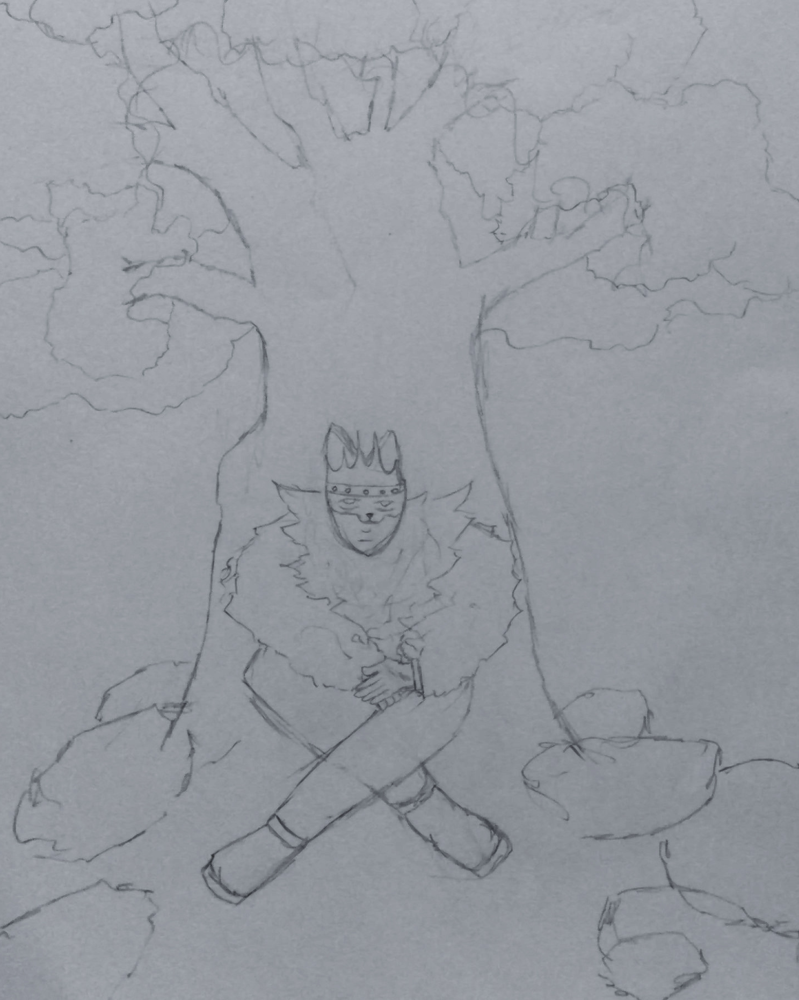
Su mente comenzó a viajar.
El mundo desapareció.
El aire dejó de existir.
Y un frío imposible envolvió todo a su alrededor.
Voces lejanas comenzaron a surgir desde la oscuridad.
No sabía de dónde provenían.
Cuando abrió los ojos...
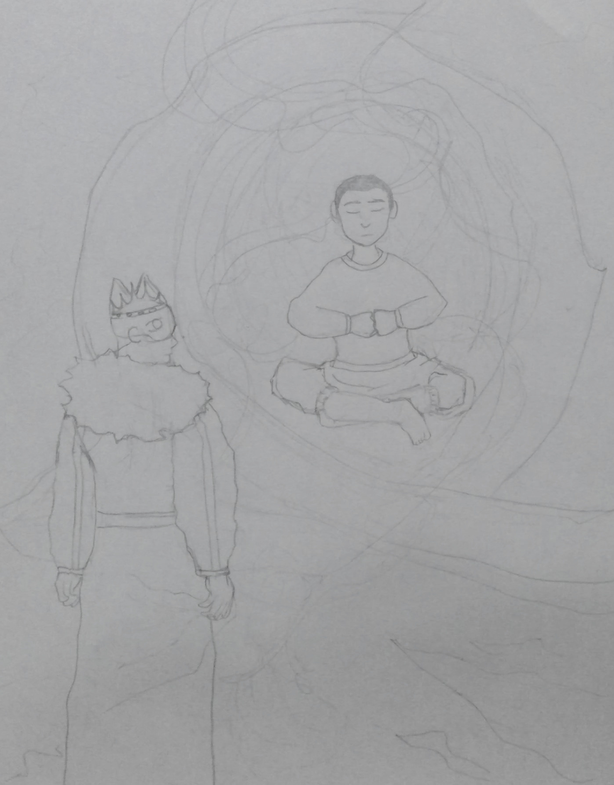
...ya no estaba en el bosque.
Frente a él se extendía un paisaje completamente cubierto de hielo. El viento soplaba con fuerza.
Entonces la vio.
Una pequeña figura se encontraba a lo lejos.
Era Dominic.
—¿Dominic...?
El hombre dio unos pasos.
Algo no tenía sentido.
Mientras él llevaba un grueso abrigo para protegerse del frío...
...a Dominic parecía no molestarle en absoluto.
Fue entonces cuando lo notó.
Dominic no estaba de pie.
Flotaba.
Suspendido en el aire.
Bajo él, una luz azul fluorescente se extendía mientras una luz recorría todo su cuerpo, iluminando el océano congelado.
Era un calamar gigante.
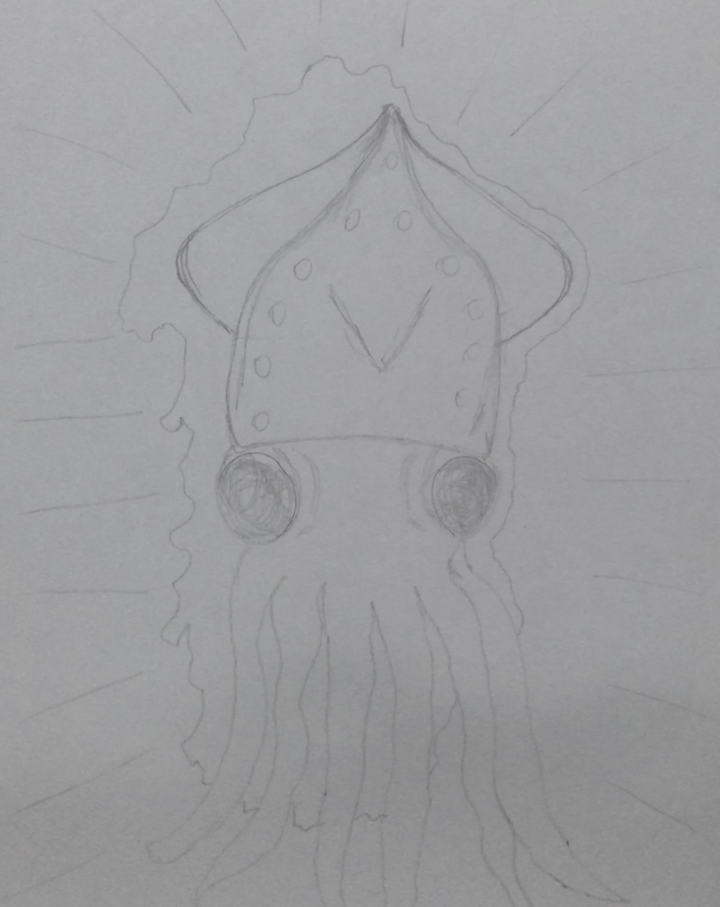
De pronto...
Un destello.
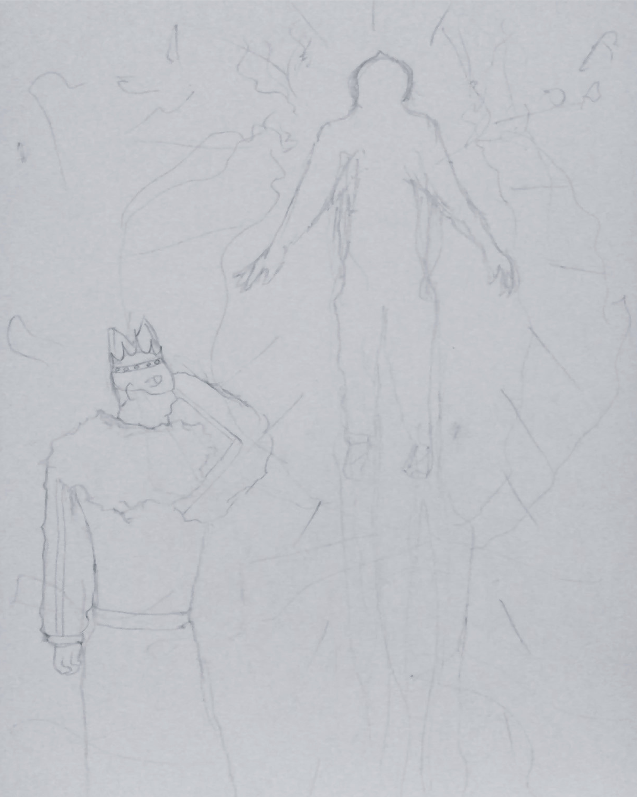
La luz envolvió por completo a Dominic.
Su brillo era tan intenso que el hombre tuvo que cubrirse el rostro con el brazo.
No podía ver.
Solo existía aquella inmensa luz.
Cuando consiguió abrir nuevamente los ojos...
Todo había cambiado.
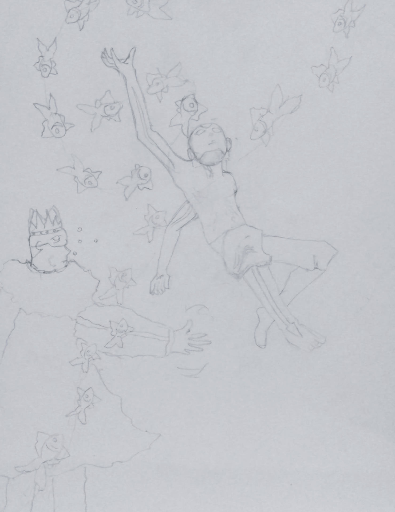
Ya no estaban sobre el hielo.
Estaban bajo el agua.
El hombre contuvo la respiración por instinto.
Miró desesperado a su alrededor.
Miles de peces nadaban en perfecta sincronía alrededor de Dominic.
No huían.
Lo obedecían.
Con movimientos precisos comenzaron a formar una figura.
Una enorme letra apareció frente a ellos.
G
La corriente seguía moviéndolos.
La letra permanecía perfecta.
Fue entonces cuando el hombre comprendió lo imposible.
—¡Estamos bajo el agua!
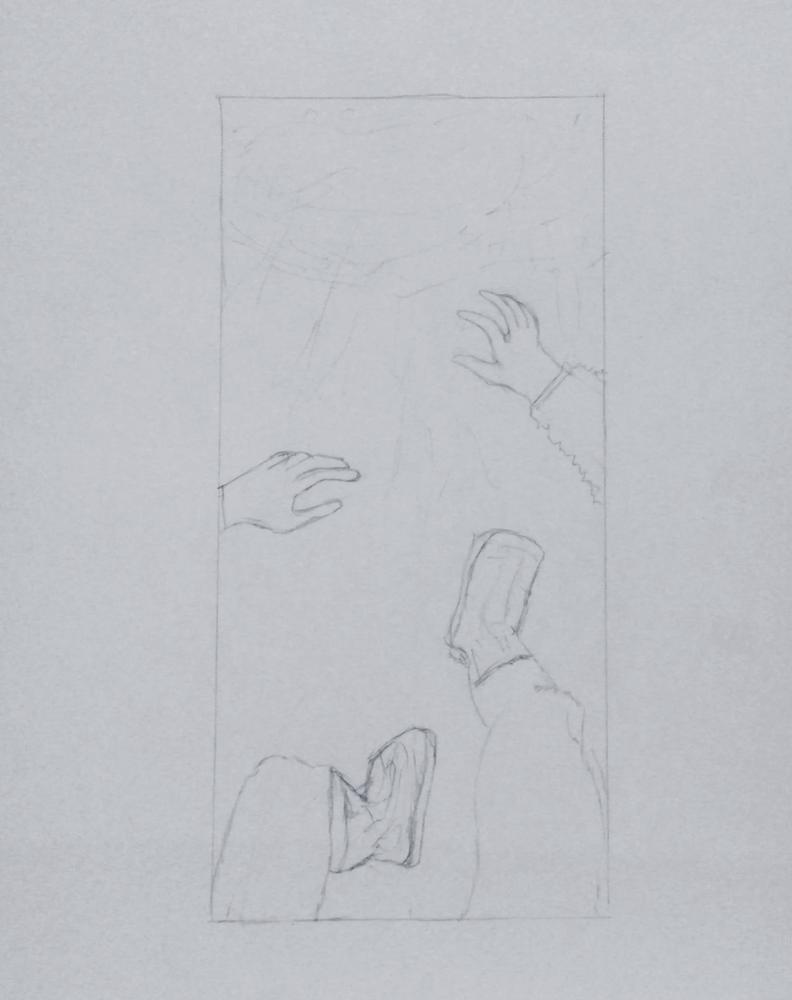
Sin pensarlo dos veces nadó hasta Dominic.
Lo sujetó con todas sus fuerzas.
Su cuerpo seguía envuelto por aquella extraña luminiscencia.
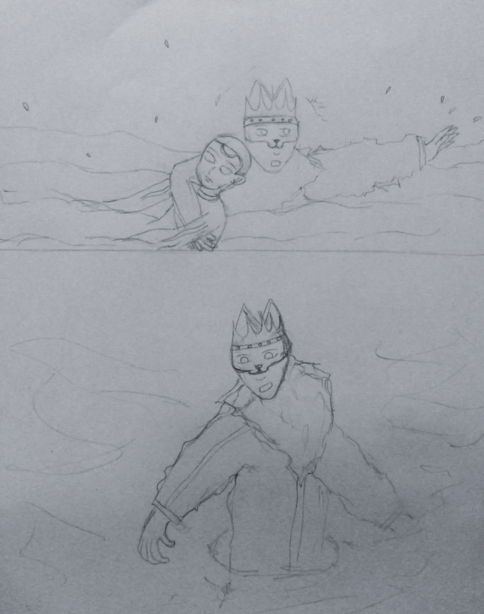
Intentó llevarlo hacia la superficie mientras una sola pregunta invadía su mente.
¿Cómo llegamos aquí?
Nadó con desesperación.
Cada brazada parecía interminable.
Hasta que finalmente atravesó lo que creyó era la superficie.
Tomó una gran bocanada de aire.
Pero al mirar sus brazos...
Dominic había desaparecido.
El corazón comenzó a acelerarse.
—¡Dominic!
Entonces una voz rompió la calma.
Levantó lentamente la mirada.
El océano había desaparecido.
Frente a él solo quedaba una inmensa playa.
Sin una sola gota de agua.
A lo lejos estaba Dominic, sonriendo como si nada hubiera ocurrido.
Dominic lo llamaba por su nombre.
Lo había reconocido.
—Mira lo que encontré.
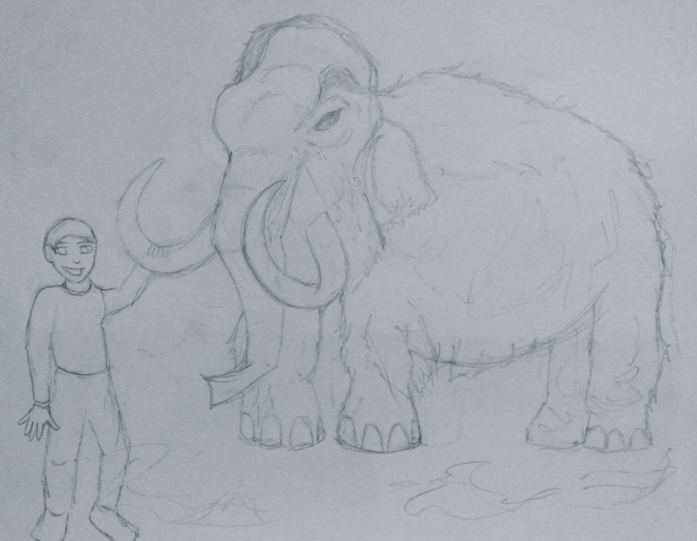
El hombre dejó escapar un suspiro de alivio.
Todavía recuperando el aliento respondió casi sin pensar.
—Sí... es un elefante.
Dominic sonrió.
Negó con la cabeza.
—¿No lo reconoces?
—Es un mamut.
El hombre frunció el ceño.
—¿Un... mamut?
—Pero... estaban extintos.
Dominic lo observó unos segundos.
Su expresión cambió.
—De eso se trata la memoria.
Antes de que pudiera preguntar qué significaban aquellas palabras...
Todo desapareció.
El hombre abrió los ojos de golpe.
Permaneció inmóvil.
Los árboles.
El viento.
La noche.
Había vuelto al bosque.
Respiró profundamente mientras intentaba convencerse de que todo había sido un sueño.
Entonces sintió algo deslizarse por su rostro.
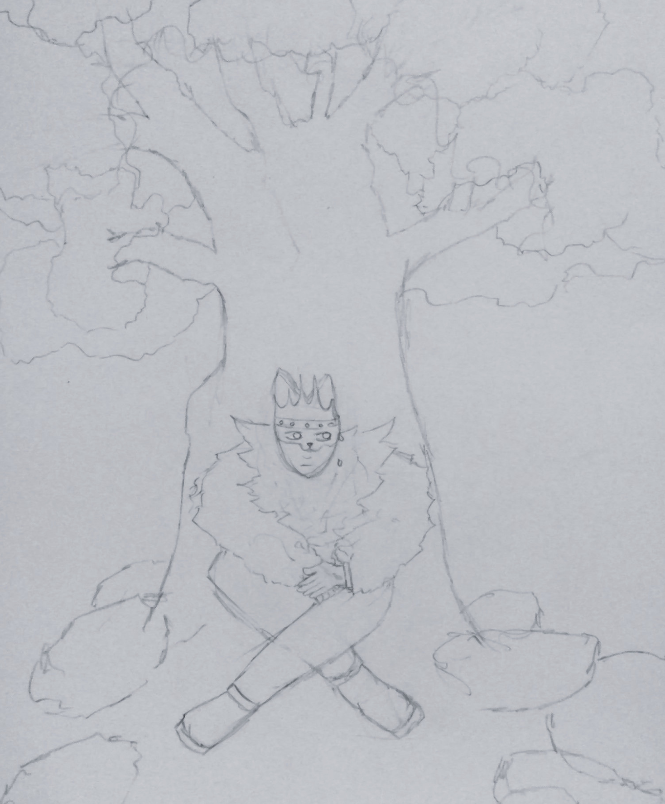
Una gota.
Después otra.
Las dos recorrieron lentamente su rostro.
Las observó en silencio.
Agua.
Su ropa estaba completamente seca.
Pero aquellas gotas eran reales.
Su mirada se perdió entre los árboles.
¿Qué había sido aquel extraño poder?
Entonces recordó algo.
Se incorporó de inmediato.
Había algo que necesitaba preguntar.
Home
La Verdad que el Cuervo Guardó
Durante mucho tiempo creímos que la sangre de nuestra familia solo podía llevarnos hacia un único destino.
Eso fue lo que nos enseñaron.
Eso fue lo que todos creímos.
Un heredero para un reino.
Un lugar que debía ser ocupado.
Un legado que debía pasar de una generación a la siguiente.
Pero con el tiempo comprendimos que la historia que conocíamos estaba incompleta.
Una parte de ella había sido olvidada.
Durante mucho tiempo no comprendíamos por qué el cuervo había llegado hasta Damián.
¿Por qué él había sido elegido para llevar consigo una memoria tan antigua?
Pero esa no era la única pregunta.
Porque mientras el cuervo despertaba recuerdos en él, el guerrero del Invierno comenzaba a recibir fragmentos de una historia que también pertenecía a su sangre.
¿Por qué la madre soñaba con una historia que nadie recordaba?
¿Por qué Dominic hablaba de la memoria como si supiera que algo había sido perdido?
La respuesta siempre estuvo en el mismo lugar.
No pertenecía a un solo heredero.
No pertenecía a una sola rama de la familia.
El cuervo pertenecía al linaje.
Vimos a un joven cargar con un destino que parecía escrito desde antes de su nacimiento.
Vimos cómo el cuervo descendió sobre él, como si reconociera una sangre antigua que nadie más podía ver.
Pero también vimos algo que nadie esperaba.
A un guerrero marcado por el invierno, alguien que jamás había buscado una corona, pero que comenzó a recibir fragmentos de una memoria que no le pertenecía solamente a él.
Durante mucho tiempo no entendimos la conexión.
Hubo un tiempo en el que ambos poderes pertenecían a una misma herencia.
La sangre real tenía la responsabilidad de gobernar.
La sangre del dragón tenía la responsabilidad de proteger.
No eran fuerzas opuestas.
Eran dos partes de un mismo legado.
Durante generaciones, ambas existieron unidas en aquellos que llevaban la sangre antigua. Pero con el paso del tiempo, los antiguos comprendieron que reunir ambos poderes en una sola persona podía romper el equilibrio del mundo.
Aquel que poseyera la corona tendría la autoridad sobre los hombres.
Aquel que poseyera el vínculo con los dragones tendría una fuerza capaz de cambiar el destino de los reinos.
Y cuando ambas cosas pertenecían a la misma persona, el poder dejaba de tener límites.
Por eso los antiguos tomaron una decisión.
Separaron los caminos.
No como castigo.
No como una pérdida.
Sino como una forma de preservar el equilibrio.
Recuerdo aquel momento con claridad.
Fue una revelación.
Antes de que pudieran comprender lo que estaba ocurriendo, una presencia antigua apareció frente a ellos.
El cuervo.
Con los siglos, la verdadera historia comenzó a desaparecer.
El mundo recordó la existencia de la corona.
Pero olvidó la existencia del fuego que había nacido junto a ella.
Porque esa fue la única verdad que se permitió permanecer en la memoria.
Que existía un heredero para gobernar.
Pero no que existía otro heredero destinado a proteger.
La promesa de que el reino nunca tuvo un solo destino.
Porque cuando los antiguos separaron los caminos, no destruyeron la unión de la sangre.
Solo dividieron sus responsabilidades.
Dos herencias.
Dos caminos.
Dos tronos.
Y después de siglos de silencio, la memoria finalmente había regresado para revelar aquello que el mundo había olvidado:
ninguno de los dos había nacido para reclamar el lugar del otro.
Ambos habían nacido para descubrir cuál de los dos legados debían aceptar.
La herencia que llevaba consigo una historia que había esperado generaciones para ser recordada.
Cuando sus alas cubrieron la luz, no vieron el futuro.
Vieron el pasado.
Vieron aquello que había sido ocultado.
Vieron a los primeros guardianes de aquel poder y comprendieron que el legado de su familia nunca había sido un único camino.
Existían dos formas de proteger un reino.
Dos formas de cargar con una responsabilidad.
Dos caminos que no competían entre sí.
El gobierno y la protección.
La voluntad de los hombres y la voluntad de los dragones.
No era una cuestión de quién merecía más.
No era una cuestión de quién debía vencer.
La verdad era mucho más simple y, al mismo tiempo, mucho más compleja:
Ambos tenían derecho.
Ambos tenían la capacidad.
Lo que nadie les había dicho era que nunca tuvieron que arrebatarse un lugar entre ellos.
Nunca fueron rivales por un único destino.
Eran dos descendientes de una misma historia, frente a dos caminos que podían cambiar el futuro del reino.
El cuervo no llegó para escoger por ellos.
Llegó para devolverles algo que les había sido negado durante generaciones:
La libertad de decidir quién querían ser.
La respuesta a esa pregunta no estaba en el cuervo.
Su propósito no era señalar a un solo sucesor.
Damián ya había asumido la responsabilidad de gobernar, pero su sangre también conservaba la conexión con el antiguo poder de los dragones.
Del mismo modo, el Guerrero del Invierno, aunque nunca había reclamado una corona, pertenecía a la misma descendencia y podía recibir la memoria que había permanecido oculta durante generaciones, así como despertar la conexión con el antiguo poder de los dragones.
Ambos tenían acceso a una herencia que había sido dividida con el paso del tiempo.
El reino no tenía un único heredero.
Tenía dos responsabilidades.
Y después de generaciones de silencio, la verdad había regresado a sus verdaderos herederos.
Por primera vez en siglos, no recibirían un destino impuesto por la historia.
No serían definidos únicamente por la corona que llevaban ni por el poder que despertaba en su sangre.
Ambos tendrían ante sí la misma elección que una vez perteneció a sus ancestros.
Elegir qué legado llevarían consigo.
Ambos podían portar una corona.
Elegir qué clase de rey querían ser.
Uno podía convertirse en el rey que guía a los pueblos desde el Trono de Hierro.
El otro podía convertirse en el rey que protege el reino junto a los dragones.
La sangre les había entregado el derecho de elegir.
Porque el verdadero legado nunca fue elegir quién merecía gobernar.
Fue devolverles la libertad de elegir qué fuerza protegerían, qué responsabilidad asumirían y qué rey decidirían ser.
Continuará...
Home
La Guerra por la Memoria del Norte
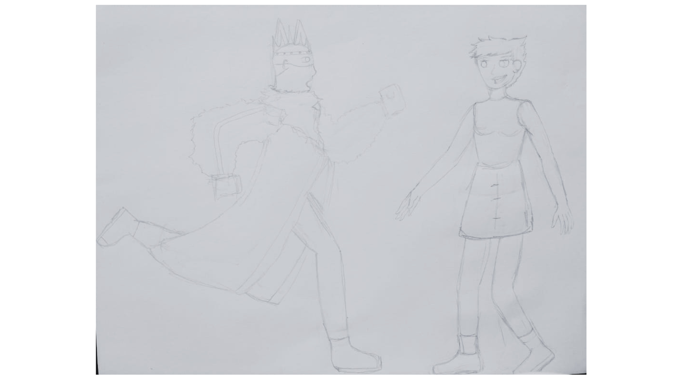
El hombre misterioso se levantó con prisa. Desde hacía días una pregunta no dejaba de darle vueltas en la cabeza y comprendía que ya no podía seguir avanzando sin conocer la respuesta. Había visto a Gloria enfrentarse a enemigos imposibles, sobrevivir donde otros habrían caído y liberar criaturas que durante siglos permanecieron encadenadas. Sin embargo, aún desconocía el origen de aquella fortaleza. Si quería entender quién era realmente la mujer que caminaba a su lado, primero debía conocer la historia de quienes habían venido antes que ella.
Después de recorrer varios senderos finalmente la encontró. Gloria permanecía de pie observando el paisaje. Al verlo acercarse le sonrió con la tranquilidad de quien no esperaba ninguna mala noticia.
—Te estaba buscando.
—¿Ocurrió algo?
—Necesito hacerte una pregunta muy importante.
Ella asintió en silencio.
—Quiero saber sobre tu familia paterna. Quiero saber quiénes son.
Gloria guardó silencio unos segundos antes de responder.
—Mi abuelo era indígena. Hijo de indígenas. Era un verdadero maestro de las artes. Tocaba música, dibujaba, escribía poesía, cantaba... parecía dominar todo aquello que pudiera expresar el alma de una persona. Nunca dejó de aprender y nunca dejó de enseñar.
Una sonrisa apareció en su rostro al recordarlo.
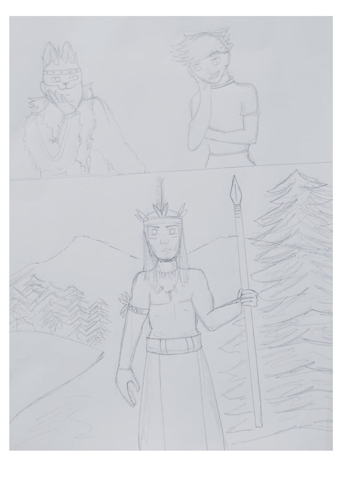
—Lo recuerdo con muchísimo cariño. Fue una persona muy noble conmigo. Sé que con mi padre y con mis tíos fue un hombre mucho más estricto. Los educó bajo una disciplina muy fuerte, pero aun así siempre lo recordaré como alguien extraordinario.
Su expresión cambió lentamente.
—Con el tiempo la familia comenzó a dividirse. Todos pensaban que alguien debía quedarse al frente de la casa, y poco a poco dejaron de ser una familia para convertirse en bandos.
El hombre misterioso permaneció atento.
—¿Bandos?
—Sí. Todos discutían sobre quién debía tomar las riendas de la familia. Mi padre nunca creyó que yo fuera la persona indicada.
—¿Por qué?
Gloria dejó escapar una pequeña risa.
—Porque cuando era niña no era buena para las artes marciales.
El hombre misterioso abrió los ojos con incredulidad.
—¿Cómo pudo decir algo así? He visto de lo que eres capaz. He visto cómo luchas. He visto tu determinación. Eres una mujer increíblemente fuerte.
Ella sonrió con cierta melancolía.
—Lo entiendo. Mi padre creció bajo un régimen muy estricto. Se esforzó toda su vida. Llegó a convertirse en campeón de artes marciales y siempre cargó con el peso de demostrar que podía ser el mejor. Supongo que tener una primera hija que no fuera un varón y que además no cumpliera aquellas expectativas nunca fue fácil para él.
Por un instante el silencio volvió a ocupar el lugar de las palabras.
Entonces Gloria levantó la vista.
—Espera...
Lo observó con curiosidad.
—¿Cuándo me has visto pelear?
El hombre misterioso sintió un sobresalto. Estuvo a punto de revelar demasiado.
Después respondió con serenidad.
—Te he visto... en mis sueños.
Ella frunció ligeramente el ceño, sin saber si aquello era una broma o una confesión.
Él decidió continuar antes de que pudiera hacer otra pregunta.
—Deja que tu familia resuelva sus propias disputas. Ellos siguen luchando por una casa. Nosotros tenemos una batalla mucho más importante.
Gloria permaneció en silencio.
—Recuerda quién eres. Ya no eres aquella niña que dudaba de sí misma. Ahora eres una guerrera. Te he visto caer una y otra vez, y también te he visto levantarte cada vez con más fuerza. Pero nuestra misión todavía no ha terminado.
Ella inclinó ligeramente la cabeza.
—El Norte aún no es libre.
—Yo no quiero ir a Estados Unidos.
El hombre misterioso sonrió.
—Crees que el Norte es un país.
Hizo una pausa mientras el viento recorría las montañas.
—El Norte es mucho más antiguo que cualquier frontera.
Ella no respondió.
—Mientras tu familia pelea por una casa... otros ya comenzaron a conquistar un reino entero.
—Los antiguos guardianes fueron desplazados. Otros ocuparon su lugar.
La mirada del hombre misterioso se endureció.
—Los Bolton no desean gobernar el Norte.
—Desean que el Norte olvide quién es.
El hombre misterioso dejó que el silencio cubriera las montañas antes de volver a hablar.
Gloria levantó lentamente la mirada.
—¿Qué quieres decir?
—La mayoría de las personas cree que las guerras comienzan por odio.
Negó con la cabeza.
—No.
—Durante siglos el Norte fue un reino libre. No porque nunca hubiera conocido la guerra, sino porque nunca dejó de recordar quién era.
Una bandera apareció en el horizonte.
Oscura.
Pesada.
Desconocida.
—Entonces llegaron los Bolton.
Gloria permaneció en silencio.
—No buscaban convertirse en parte del Norte.
Buscaban reemplazarlo.
No querían aprender su historia.
Querían escribir una nueva.
No querían proteger sus bosques.
Querían apropiarse de ellos.
No querían convivir con su gente.
Querían que esa gente olvidara quién había sido.
El hombre misterioso dio unos pasos hacia la nieve.
—Eso es lo que hacen los imperios.
No siempre destruyen primero las murallas.
Primero destruyen la memoria.
Porque un pueblo que olvida su historia termina creyendo que siempre perteneció a quien lo conquistó.
Gloria recordó el antiguo castillo de la Luna.
—¿Tan grande es su reino?
El hombre misterioso sonrió.
—Mucho más grande de lo que imaginas.
Su reino es tan inmenso... que incluso Estados Unidos y Alaska juntos parecen pequeños cuando se comparan con las tierras que dominan.
Gloria abrió los ojos sorprendida.
—¿Entonces por qué siguen avanzando?
—Porque nunca fue una cuestión de territorio.
Fue una cuestión de poder.
Quien desea poseerlo todo nunca considera suficiente lo que ya tiene.
Volvió a mirar hacia el Norte.
—Los Bolton no desean gobernar el Norte.
Desean que el Norte deje de existir.
No basta con conquistar un reino.
Necesitan convencer al mundo de que ese reino nunca tuvo identidad propia.
Por eso destruyen símbolos.
Por eso cambian nombres.
Por eso persiguen la cultura de quienes se niegan a olvidar.
El hombre misterioso respiró profundamente.
—Y por eso esta guerra no trata solamente de castillos.
Ni de coronas.
Ni de reyes.
Se trata de memoria.
Se trata de identidad.
Se trata de decidir quién tendrá el derecho de contar la historia del Norte.
Gloria sintió un escalofrío.
El hombre misterioso la observó con serenidad.
—Tú hiciste algo que los Bolton jamás podrán comprender.
Ellos conquistan lugares.
Tú liberaste un pueblo.
Liberaste a los unicornios.
Y cuando devolviste la libertad a sus guardianes, Escocia hizo algo que ningún ejército puede obligar.
Te aceptó como una de los suyos.
Una familia no siempre es aquella en la que naces.
A veces...
es aquella que decides proteger.
Gloria sintió que aquellas palabras tenían un peso que iba mucho más allá de la conversación que acababan de tener.
Entonces él dio un paso al frente.
—Ahora ya entiendo por qué eres como eres.
Ella levantó la vista.
—Toda tu vida te enseñaron a controlar tu fuerza. A ser amable. A no decepcionar a nadie.
Su mirada permanecía fija sobre ella.
—Pero nadie te enseñó qué hacer con todo aquello que guardaste en silencio durante tantos años.
Gloria respiró profundamente.
—¿Qué quieres decir?
El hombre misterioso sonrió con una tranquilidad que, por primera vez, resultaba inquietante.
—Presiento que todavía no hemos visto ni siquiera el cinco por ciento de tu verdadero poder.
El viento comenzó a soplar con fuerza entre las montañas.
—Y eso es precisamente lo que vamos a practicar ahora.
Gloria sintió un escalofrío recorrer todo su cuerpo.
—¿Practicar qué?
El hombre misterioso respondió sin apartar la mirada.
—Encontrar tu oscuridad.
Home
La voz de los ancestros
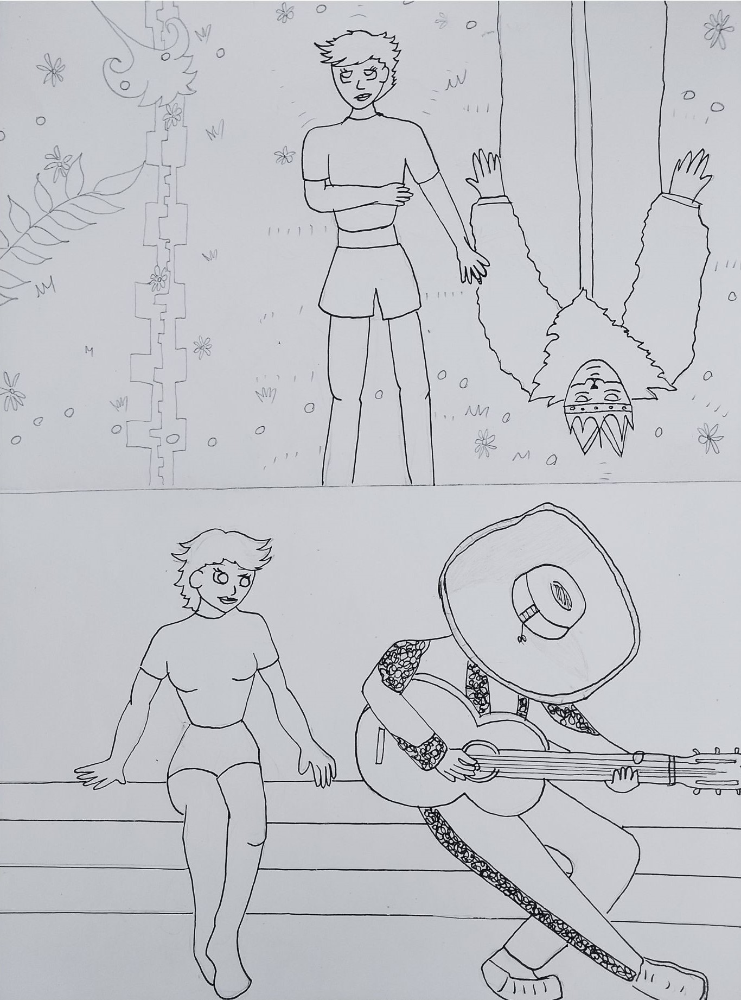
El hombre misterioso caminó varios minutos sin decir una sola palabra. Gloria lo siguió mientras los árboles se volvían cada vez más altos y la luz del sol apenas lograba atravesar las copas del bosque.
Finalmente llegaron a un pequeño claro cubierto de flores.
El viento era tan suave que parecía una respiración.
—¿Por qué me trajiste aquí? —preguntó Gloria.
Él sonrió con serenidad.
—Porque todavía hay un poder que nunca has querido utilizar.
Ella bajó la mirada.
Sabía exactamente de qué hablaba.
—Hablar con los espíritus...
—No es miedo a ellos.
—Es miedo a lo que puedan decirme.
El hombre misterioso asintió.
—Tu abuelo fue un chamán. Ese conocimiento nunca desapareció. Solo estaba esperando el momento adecuado para despertar en ti.
Gloria respiró profundamente.
—¿Y si no estoy preparada?
—Nunca estarás lista para algo como esto.
Hizo una pausa antes de extender la mano hacia el campo de flores.
—Acuéstate.
Ella se acostó.
El hombre misterioso hizo lo mismo, en posición contraria.
Durante varios segundos ninguno habló.
El sonido del viento comenzó a mezclarse con un extraño murmullo.
Las flores parecían respirar.
El cielo desapareció.
El bosque desapareció.
Y el mundo quedó completamente en silencio.
Cuando Gloria volvió a abrir los ojos ya no estaba en el bosque.
Se encontraba sobre una enorme colina bañada por una luz dorada.
A lo lejos había un viejo árbol.
Sentado bajo su sombra estaba un hombre tocando una guitarra.
Cada nota parecía llenar el aire de paz.
Gloria sonrió antes de darse cuenta de que las lágrimas ya recorrían su rostro.
—...¿Abuelo?
El hombre levantó lentamente la vista.
Su sonrisa era exactamente la misma que ella recordaba.
—¡Hijita!
Dejó la guitarra a un lado y abrió los brazos.
Gloria corrió hasta él.
Lo abrazó con tanta fuerza como si quisiera recuperar todos los años que habían pasado.
—Qué bueno verte otra vez...
El abuelo cerró los ojos.
—Y yo estoy inmensamente feliz de verte.
Se separaron apenas unos centímetros para poder mirarse.
—Me parece maravilloso que podamos reunirnos de nuevo.
Gloria sonrió entre lágrimas.
—Tenemos muchas cosas de qué hablar.
El abuelo soltó una pequeña risa.
—Lo sé.
Volvió a tomar la guitarra y dejó que una melodía suave acompañara la conversación.
—Ya sé lo que está ocurriendo en la casa.
Gloria bajó la mirada.
—Entonces... ¿ya sabes todo?
—Sí.
Guardó silencio unos segundos.
—Todo esto ha sido una prueba.
Una prueba para revelar el verdadero corazón de cada uno de mis hijos.
No para ver quién tiene más fuerza.
Sino quién es capaz de amar incluso cuando más duele.
Gloria respiró hondo.
—Pero no solo ocurre eso...
Levantó la vista.
—En el mundo también hay una guerra muy importante.
Él asintió lentamente.
—También la he visto.
—Yo no puedo quedarme aquí con ellos...
Su voz comenzó a quebrarse.
—...pero tampoco quiero dejarlos solos.
Sé que estarán en peligro.
El abuelo la observó con ternura.
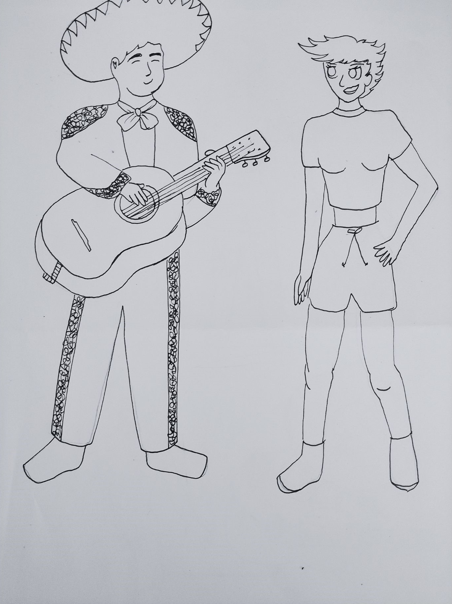
Después hizo una pregunta muy sencilla.
—Si tuvieras que confiar esta responsabilidad a una sola persona...
—¿En quién pensarías?
Gloria levantó la cabeza.
Los dos permanecieron en silencio.
Un instante después sonrieron exactamente al mismo tiempo.
—Estamos pensando en la misma persona... —dijeron los dos.
Ella soltó una pequeña risa.
—Mi hermano.
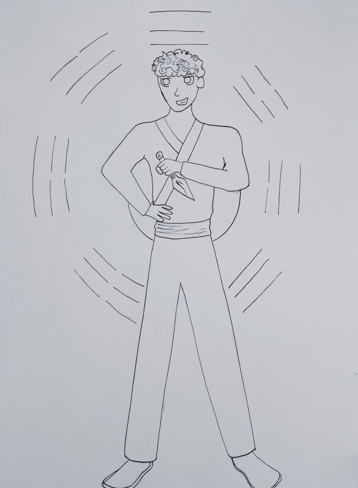
Él es quien sigue.
Por jerarquía le corresponde ocupar ese lugar.
Pero más importante aún...
Es una buena persona.
El abuelo asintió con orgullo.
—Eso mismo pensaba.
Después tomó ambas manos de Gloria.
—Escúchame bien, hijita.
Tú y tu hermano comparten algo que nadie puede recibir como un regalo.
Comparten una historia.
Un linaje.
Una familia que, durante generaciones, ha luchado para que ustedes no pierdan el lugar que les corresponde por nacimiento.
No hablo de privilegios.
Hablo de responsabilidad.
De cuidar a quienes vienen detrás.
Eso no se hereda con un documento.
Se demuestra con los actos.
El anciano acarició la cabeza de Gloria como cuando era niña.
—Tú, por ser la mayor, tuviste que recorrer el camino más difícil.
Viviste injusticias.
Aprendiste a reconocer la envidia, el orgullo y el abuso.
Muchas veces te preguntaste por qué.
Hoy ya conoces la respuesta.
Todo lo que viviste forma parte de la memoria de nuestro linaje.
Cuando una generación aprende una lección con mucho dolor...
Las siguientes ya no necesitan tropezar con la misma piedra.
Eso es la memoria colectiva.
No consiste en cargar el sufrimiento.
Consiste en transformarlo en sabiduría.
Gloria permanecía completamente en silencio.
El abuelo continuó.
—Por eso debes decir siempre la verdad, aunque incomode.
La verdad puede dividir por un momento.
Pero una mentira destruye familias durante generaciones.
No permitan que el orgullo decida por ustedes.
Si entregan el liderazgo a quien solo busca controlar...
La familia volverá a repetir los mismos errores.
Busquen siempre a quien tenga el corazón dispuesto a servir.
No al que quiera mandar.
Ese es el verdadero heredero.
No quien levanta más la voz.
Sino quien mantiene unida a la familia cuando todo parece romperse.
Las lágrimas volvieron a aparecer en los ojos de Gloria.
—Entonces...
—¿Crees que él podrá hacerlo?
El abuelo sonrió.
—No estará solo.
Mientras recuerde quién es...
Siempre caminaré a su lado.
Y tú también.
Después volvió a tomar la guitarra.
Una melodía comenzó a llenar nuevamente el lugar.
—Estoy muy orgulloso de ti.
Porque elegiste decir la verdad.
Y decir la verdad, cuando hacerlo tiene un precio, es uno de los actos más valientes que existen.
No te desanimes.
Lo mejor todavía está por venir.
Ahora sabes dónde encontrarme.
Puedes buscarme siempre que tu corazón necesite una respuesta.
Gloria volvió a abrazarlo.
No quería soltarlo.
Antes de desaparecer, el abuelo sonrió una última vez.
—Y cuando regreses...
Dales un abrazo a todos mis nietos.
Y a mi viejita...
Dile que la amo.
Que la extraño todos los días.
Pero que nunca ha dormido sola.
Porque cada noche descanso junto a ella, aunque no pueda verme.
La luz comenzó a envolverlo lentamente.
La melodía de la guitarra siguió sonando incluso cuando su figura ya se había desvanecido.
Y Gloria despertó de nuevo sobre el campo de flores, con una lágrima todavía recorriendo su mejilla.
El hombre misterioso seguía acostado a su lado, mirando el cielo.
Sin girar la cabeza, preguntó con una sonrisa:
—¿Pudiste encontrar las respuestas que buscabas?
Gloria cerró los ojos por un instante.
Luego sonrió.
—No.
Encontré algo mucho más importante.
Encontré el camino.
Home